直近1週間の人気フィード
はてなブックマーク数を元に新着優先で並べ替え
「ほぼ全人類が永久に失業する」Anthropic研究者がAIの未来を予測 646 Menthas #all
646 Menthas #all
Anthropicの研究者Tao Lin氏が、人間の雇用の将来について厳しい見通しを示した。
2日前

「あと10年もたないかもしれない」Rubyの父 まつもとゆきひろが危惧するOSS文化の消滅 - エンジニアtype | 転職type 529Menthas #all
「OSS文化はあと10年もたないかもしれない」Rubyの生みの親・まつもとゆきひろ氏が語る危機感の正体。AIの普及でOSSの存在が見えなくなり、開発者の負担が増大する中、この文化は存続できるのか。企業による支援の難しさや、OSSが失われることでエンジニアが直面する未来を聞いた。
1日前

１６７年解けなかった「リーマン予想」、生成ＡＩが証明か…アンソロピックの数学者が発表 328 Menthas #all
【読売新聞】 【ワシントン＝中根圭一】米ＡＩ（人工知能）開発企業アンソロピックに所属する数学者が２０日、同社の生成ＡＩ「クロード」を使い、数学の難問「リーマン予想」を証明したと自身のウェブサイトで発表した。正しければ、１６７年にわた
14時間前
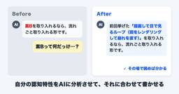
AIの返答が理解しづらいので、自分の認知特性をAIに分析させてSkillにした - $shibayu36->blog;
344 Menthas #all
Menthas #all
最近AIの返答を理解するのに時間がかかってつらかった。そこで自分の認知特性をClaude Codeに分析させ、それに合わせて返答を書かせるSkillを作った。かなり読みやすくなったので作ったものと作り方を紹介する。 作りたいと思った理由: 記憶力が低く、AIの返答を理解するのがつらかった Claude Codeの返答を読んでいて「案Bって何だっけ？」「準備PRってなんだっけ」と聞き返すことがとても
2日前

1万円のシンセをAIで魔改造。電子楽器のファームウェア開放が始まった | ギズモード・ジャパン 205 Menthas #all
中国のM-VAVEという楽器メーカーが販売している小型FMシンセ「FM-1」が、ちょっとした話題になっています。きっかけはユーザーによるカスタムファームウェアの開発です。この秋からソフトウェア改造が流行FM-1はアリエクなどを覗くと、だいた
15時間前

イーロン・マスクが金持ちでもそんなネットで嫌われてないのって「男の子がワクワクするもの」に迷わず巨額の金を突っ込むからだと思うんだよな 194 はてなブックマーク - 人気エントリー - テクノロジー
はてなブックマーク - 人気エントリー - テクノロジー
【残り2日】Amazonマンガ毎週末セール 11/20-23 ファンタジーマンガが50%ポイント還元中！ 50%ポイント還元 イーロン・マスク イーロン・リーヴ・マスク（英語: Elon Reeve Musk、1971年6月28日 - ）は、南アフリカ共和国出身のアメリカ合衆国の起業家。2025年以降、第2次トランプ政権下で、公式には特別政… 73 users 36...
15時間前
どれだけGeminiが賢くなってもAIオタクが避ける理由。ついに解消の可能性 - すまほん!! 249 はてなブックマーク - 人気エントリー - テクノロジー
はてなブックマーク - 人気エントリー - テクノロジー
評判の悪かったGeminiですが、ようやく最近はClaudeのOpusやFable、ChatGPT CodexのAstraなどに匹敵、または超えてくるようなモデルも出てきています。 ところが、実際にGeminiに本格的に乗り換えている人はまだまだ少ない印象です。その大きな原因がついに解消されるかもしれません。 GoogleのLogan Kilpatrick氏は日本...
1日前

はてなエンジニアの自作RSSリーダーをご紹介します 2026 - Hatena Developer Blog
224 Menthas #all
はてなには多くのエンジニアが在籍していますが、普段から開発が好きな人が多く、業務以外でも各自が欲しいものなどを自作していることがあります。特に近年では生成AIによって自作のハードルはかなり下がったと思われます。そんな自作ツールたちですが、今回はRSSリーダーに絞って紹介していきます。 自作RSSリーダー紹介 id:yset0 職種: ウェブアプリケーションエンジニア フィード解析 github.c
1日前
はてなエンジニアの自作RSSリーダーをご紹介します 2026 | Hatena Developer Blog 224 企業テックブログRSS
はてなには多くのエンジニアが在籍していますが、普段から開発が好きな人が多く、業務以外でも各自が欲しいものなどを自作していることがあります。特に近年では生成AIによって自作のハードルはかなり下がったと思われます。そんな自作ツールたちですが、今回はRSSリーダーに絞って紹介していきます。 自作RSSリーダー紹介 id:yset0 職種: ウェブアプリケーションエンジニア フィード解析 github.c
1日前
はてなエンジニアの自作RSSリーダーをご紹介します 2026 224 Hatena Developer Blog
はてなには多くのエンジニアが在籍していますが、普段から開発が好きな人が多く、業務以外でも各自が欲しいものなどを自作していることがあります。特に近年では生成AIによって自作のハードルはかなり下がったと思われます。そんな自作ツールたちですが、今回はRSSリーダーに絞って紹介していきます。自作RSSリーダー紹介id:yset0職種: ウェブアプリケーションエンジニアフィード解析 github.com/m
1日前

ソフトウェアファクトリーとコード設計と顧客価値 137 はてなブックマーク - 人気エントリー - テクノロジー
はてなブックマーク - 人気エントリー - テクノロジー
横軸を時間とし、上段に人、下段にエージェントを置いた図です。人の指示、エージェントの実行、人の確認が交互に3回続きます。2回目と3回目の間に、人が離席している区間があります。この区間では、エージェントも停止しています。課題ごとに人の入力が必要です。 離席 人 課題ごとに人の入力が必要 エージェント 時間 ...
18時間前
1万円のシンセをAIで魔改造。電子楽器のファームウェア開放が始まった | ギズモード・ジャパン 205 はてなブックマーク - 人気エントリー - テクノロジー
中国のM-VAVEという楽器メーカーが販売している小型FMシンセ「FM-1」が、ちょっとした話題になっています。きっかけはユーザーによるカスタムファームウェアの開発です。 FM-1はアリエクなどを覗くと、だいたい1万円以下で買えるガジェットシンセ。音源方式はFMで、6オペレーター、32アルゴリズム、同時発音数12とシンプ...
1日前
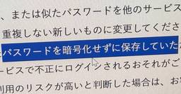
[ITmedia News] 湘南美容クリニックのSBC、162万人分の個人情報流出 パスワードは「暗号化せず保存していた」 190ITmedia 総合記事一覧
162万4000人分の氏名、性別、電話番号、メールアドレス、パスワード、住所、生年月日、などが流出。期間は2010年?2023年で、「当時は登録パスワードを暗号化せずに保存していた」という。
2日前
モダンな情シスは、AIエージェントを育て、任せ、圧倒的な生産性を生む｜kajinari | モダンな情シス 113 Menthas #all
Menthas #all
この記事は、NOTAのテクノロジー連載「Tech Behind the Scenes」です。 おはようございます！こんにちは！おやすみなさい！NOTA で Corp IT（情シス）を担当している kajinari です。 この 1 年で、Corp IT の日々の運用作業のほとんどを Claude の Skill として定義しました。アカウントの発行、クラウドサービス権限の付与、クラウドサービスの設
15時間前
自分の代わりに動くAgentへ。Claude CodeとCodexで作る自律改善ハーネス 307 Zennのトレンド
Zennのトレンド
自分の仕事を、コーディングAgentに自律的に進めてほしい。一度伝えたことは覚えていて、それを踏まえて、仕事の種類を問わず「私の代わりに」動いてほしい。これが一番の動機で、2026年7月に、自律作業のための個人のハーネスを作り始めました。ほかにも困っていたことがあります。今でこそOrcaのように、いろいろなコーディングAgentを複数のターミナルで同じように扱える開発環境（ADE: Agentic
2日前

【分析】「私はMAGAではない」 マスク氏の方向転換が発する強烈なサイン 96 はてなブックマーク - 人気エントリー - テクノロジー
はてなブックマーク - 人気エントリー - テクノロジー
ニューヨーク市で開催された「2026年ディールブック・サミット」にオンライン参加したマスク氏。ニューヨーク・タイムズの金融コラムニスト、アンドリュー・ロス・ソーキン氏と対談した＝11月18日/Spencer Platt/Getty Images （CNN） 米実業家イーロン・マスク氏は18日、トランプ米大統領に背を向ける、ずいぶん弱腰な...
17時間前

SSDの価格は2027年後半に下落し始める可能性あり 138 GIGAZINE
GIGAZINE
アナリストの分析により、HDDの価格が今後2年で高止まりする一方、SSDは価格が落ち着くという予測が出てきました。続きを読む...
1日前

[ITmedia News] ドンキのAI社員「近藤あい」が正式デビュー 販促POPや動画で活躍へ 運営元「すでに裏に20人ぐらいいる」 122ITmedia 総合記事一覧
ドン・キホーテのAI社員「近藤あい」が11月23日に正式デビューする。実は裏には約20人のAIキャラクターが控えているという。開発に約1年半を費やした舞台裏や、AI社員を導入した狙いを担当者に聞いた。
1日前
モダンな情シスは、AIエージェントを育て、任せ、圧倒的な生産性を生む｜kajinari | モダンな情シス 113 はてなブックマーク - 人気エントリー - テクノロジー
おはようございます！こんにちは！おやすみなさい！NOTA で Corp IT（情シス）を担当している kajinari です。 この 1 年で、Corp IT の日々の運用作業のほとんどを Claude の Skill として定義しました。アカウントの発行、クラウドサービス権限の付与、クラウドサービスの設定変更、PC や iPhone の手配、Zoom Phone ...
1日前

相次ぐOSSの脆弱性に、とりあえずクラウドWAF入れるだけでだいぶ違う話+Rootlessコンテナもいいぞ 195 Zennのトレンド
昨日から今日にかけて、なんだかすごいことになっていますね。先日「PHP2Shell（CVE-2026-109618 / CVE-2026-109619）」というコアそのもののRCE（リモートコード実行）が出て大騒ぎになったと思ったら、JavaでもJavaのBase64デコーダ周りで「Java2Shell（CVE-2026-114938）」が出てきました。さらに今日（11月18日・米国時間）はngi
3日前

楽天証券への不正アクセスについてまとめてみた 369 piyolog
piyolog
2026年11月17日、楽天証券は第三者による不正アクセスに伴い、保有する顧客情報の一部が漏えいした可能性があると公表しました。ここでは関連する情報をまとめます。テスト環境から顧客情報漏えいのおそれ楽天証券は11月16日に一部システムへの第三者による不正アクセスの可能性を検知し、該当箇所へのアクセスを遮断して修正などを実施。その後の調査で、テスト環境のシステム内で管理していた情報の一部が11月11
4日前

GitHub - mitaku/andon: A one-person software factory: AI coding agents take tasks from a ledger through review to merge, and call the human only for decisions only they can make. 68 はてなブックマーク - 人気エントリー - テクノロジー
はてなブックマーク - 人気エントリー - テクノロジー
Andon — a one-person software factory. AI coding agents take issues from a ledger through implementation, review and merge, and the human is called only for the decisions that only they can make. 一人で使
7時間前
NVIDIAグラボにて発生していた「SSD無限酷使」不具合の修正バージョンが配信。“何もしてない”のにSSDに数十GB書き込まれていた問題 - AUTOMATON 67 はてなブックマーク - 人気エントリー - テクノロジー
はてなブックマーク - 人気エントリー - テクノロジー
NVIDIAグラボにて発生していた「SSD無限酷使」不具合の修正バージョンが配信。“何もしてない”のにSSDに数十GB書き込まれていた問題 NVIDIAのGPU向けドライバー「GeForce Game Ready Driver」の一部のバージョンで、無操作中にもSSDへの書き込みが発生していた不具合が、最新バージョンにて修正されたようだ。 NVIDIAは11...
17時間前

部下がClaudeっぽいスライドしか出してこなくてウンザリしてる上司はこれを使わせなさい 776 LLMタグが付けられた新着記事 - Qiita
LLMタグが付けられた新着記事 - Qiita
はじめにAIはプログラミングだけでなく、営業資料や発表資料まで作れるようになった。部下に資料を頼むと、AIで作ったスライドが返ってくることも増えたのではないだろうか。そして諸君は、そのスライドをひと目見てこう思ったはずだ。「これ、生成AIで作ったでしょ？」と。本記事では、AIのスライドがなぜ「Claudeっぽく」なるのか、そしてそう見せないために、部下にどのスキルを使わせるべきかを伝授する。弊社N
5日前
部下がClaudeっぽいスライドしか出してこなくてウンザリしてる上司はこれを使わせなさい 776 AIタグが付けられた新着記事 - Qiita
はじめにAIはプログラミングだけでなく、営業資料や発表資料まで作れるようになった。部下に資料を頼むと、AIで作ったスライドが返ってくることも増えたのではないだろうか。そして諸君は、そのスライドをひと目見てこう思ったはずだ。「これ、生成AIで作ったでしょ？」と。本記事では、AIのスライドがなぜ「Claudeっぽく」なるのか、そしてそう見せないために、部下にどのスキルを使わせるべきかを伝授する。弊社N
5日前
部下がClaudeっぽいスライドしか出してこなくてウンザリしてる上司はこれを使わせなさい 776 生成AIタグが付けられた新着記事 - Qiita
はじめにAIはプログラミングだけでなく、営業資料や発表資料まで作れるようになった。部下に資料を頼むと、AIで作ったスライドが返ってくることも増えたのではないだろうか。そして諸君は、そのスライドをひと目見てこう思ったはずだ。「これ、生成AIで作ったでしょ？」と。本記事では、AIのスライドがなぜ「Claudeっぽく」なるのか、そしてそう見せないために、部下にどのスキルを使わせるべきかを伝授する。弊社N
5日前
部下がClaudeっぽいスライドしか出してこなくてウンザリしてる上司はこれを使わせなさい 776 AIエージェントタグが付けられた新着記事 - Qiita
はじめにAIはプログラミングだけでなく、営業資料や発表資料まで作れるようになった。部下に資料を頼むと、AIで作ったスライドが返ってくることも増えたのではないだろうか。そして諸君は、そのスライドをひと目見てこう思ったはずだ。「これ、生成AIで作ったでしょ？」と。本記事では、AIのスライドがなぜ「Claudeっぽく」なるのか、そしてそう見せないために、部下にどのスキルを使わせるべきかを伝授する。弊社N
5日前
部下がClaudeっぽいスライドしか出してこなくてウンザリしてる上司はこれを使わせなさい 776 ClaudeCodeタグが付けられた新着記事 - Qiita
はじめにAIはプログラミングだけでなく、営業資料や発表資料まで作れるようになった。部下に資料を頼むと、AIで作ったスライドが返ってくることも増えたのではないだろうか。そして諸君は、そのスライドをひと目見てこう思ったはずだ。「これ、生成AIで作ったでしょ？」と。本記事では、AIのスライドがなぜ「Claudeっぽく」なるのか、そしてそう見せないために、部下にどのスキルを使わせるべきかを伝授する。弊社N
5日前

[ITmedia News] Microsoft、AIによるサイバー攻撃にAIエージェントで対抗する新サービス「Microsoft Perception」提供開始 85ITmedia 総合記事一覧
米Microsoftは日本時間11月18日未明に開幕した年次イベント「Microsoft Ignite 2026」で、AIによるサイバー攻撃に対抗するためのAIエージェントによる新サービス「Microsoft Perception」の提供開始を発表しました。
2日前
Microsoft、AIによるサイバー攻撃にAIエージェントで対抗する新サービス「Microsoft Perception」提供開始 85ITmedia AI＋ 最新記事一覧
米Microsoftは日本時間11月18日未明に開幕した年次イベント「Microsoft Ignite 2026」で、AIによるサイバー攻撃に対抗するためのAIエージェントによる新サービス「Microsoft Perception」の提供開始を発表しました。
2日前
Microsoft、AIによるサイバー攻撃にAIエージェントで対抗する新サービス「Microsoft Perception」提供開始 | ITmedia AI＋ 最新記事一覧 85AI情報RSS
米Microsoftは日本時間11月18日未明に開幕した年次イベント「Microsoft Ignite 2026」で、AIによるサイバー攻撃に対抗するためのAIエージェントによる新サービス「Microsoft Perception」の提供開始を発表しました。
2日前
Microsoft、AIによるサイバー攻撃にAIエージェントで対抗する新サービス「Microsoft Perception」提供開始 85ITmedia NEWS セキュリティ 最新記事一覧
米Microsoftは日本時間11月18日未明に開幕した年次イベント「Microsoft Ignite 2026」で、AIによるサイバー攻撃に対抗するためのAIエージェントによる新サービス「Microsoft Perception」の提供開始を発表しました。
2日前

11月に修正されたPHPの脆弱性についてまとめてみた 135 piyolog
2026年11月19日、PHPの開発元であるThe PHP Groupは4系統のセキュリティリリース(PHP 8.5.13、8.4.28、8.3.37、8.2.36)を公開し、複数の脆弱性を修正しました。ここでは関連する情報をまとめます。どんな脆弱性が修正されたの?The PHP Groupは11月18日、19日14時から14時30分(協定世界時、日本時間23時から23時30分)にセキュリティリリ
2日前

NGINXの脆弱性 CVE-2026-123633、CVE-2026-123007についてまとめてみた 134 piyolog
2026年11月19日、国家サイバー統括室はWebサーバーnginxにリモートから未認証で任意のコード実行等が可能となる脆弱性が公表されたとして、対象環境の運用管理者に速やかなアップデートの適用等を求める注意喚起を行いました。ここでは関連する情報をまとめます。どんな脆弱性が確認されたの?nginx.orgとF5は11月18日、NGINXのHTTP/2の実装(ngx_http_v2_module)の
3日前

宇宙の温度の約2800億分の1まで原子を冷却することに成功 48 GIGAZINE
中国の北京大学や中国科学院などの研究チームが、中国の宇宙ステーション「天宮」で原子気体の等価温度を9.7ピコケルビン(1兆分の9.7℃)まで低下させることに成功しました。微小重力環境を利用した実験で、従来の最低記録である38ピコケルビンを大幅に更新しています。続きを読む...
12時間前
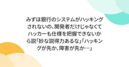
みずほ銀行のシステムがハッキングされないの、開発者だけじゃなくてハッカーも仕様を把握できないから説「妙な説得力あるな」「ハッキングが先か、障害が先か…」 48 はてなブックマーク - 人気エントリー - テクノロジー
みずほ銀行のシステムがハッキングされないの、開発者だけじゃなくてハッカーも仕様を把握できないから説「妙な説得力あるな」「ハッキングが先か、障害が先か…」
14時間前
「パッチ地獄」が米IT障害誘発、AIがせかす脆弱性修正 銀行や空港停止 - 日本経済新聞 47 はてなブックマーク - 人気エントリー - テクノロジー
はてなブックマーク - 人気エントリー - テクノロジー
【ニューヨーク=西邨紘子、シリコンバレー=伴正春】米国の銀行や空港でシステム障害が相次ぐ。原因は個別に異なるものの、大きな背景には人工知能（AI）が膨大な脆弱性を見つけ、パッチ（修正）適用や更新を急がざるを得ない事情がある。日本のインフラも同様のリスクを抱える。マイクロソフト、チェース、ユナイテッド...
18時間前
新宿駅で財布を忘れて家に帰れない女の子から「PayPay1000円分を現金で交換して貰えませんか？」とお願いされ、「返さなくていいよ」と1000円あげたら喜ばれず戸惑っていた
44 はてなブックマーク - 人気エントリー - テクノロジー
はも @hamo_0203 前に新宿駅で20代前半の女の子に「財布を忘れて家に帰れて無くて困ってて…。PayPay1000円分を現金で交換して貰えませんか？」って話しかけられて、あらぁ…可哀想に…😭って田舎モンだからめちゃくちゃ信じたのね。 それが、PayPayから情報を抜き取る犯罪って知らなくて。 でも、私、その時→ 2026-11-21 0...
6時間前
スシロー、アメリカ・ニューヨーク1号店が大行列の人気「チップ不要なシステムも好評の理由」→アメリカ人も面倒くさいと思ってるのかよ… 35 はてなブックマーク - 人気エントリー - テクノロジー
ライブドアニュース @livedoornews 【開店】スシロー、アメリカ・ニューヨーク1号店に行列「チップ不要」に称賛の声 news.livedoor.com/article/detail… チップ不要のシステムも好評で、来店客から「スタッフが受け取るべき報酬を最初から料金に含めるという考え方が気に入っています。いい仕組みだと思います」という声...
12時間前

Antigravityを他社AIから操作すると「垢BAN」？ 注意点をGoogle Cloud日本法人に聞いた 55ITmedia AI＋ 最新記事一覧
「Google Antigravity」を他社のAIツールを介して利用すると規約違反でアカウント停止の可能性があるとXなどで話題になっている。Google Cloud日本法人への取材や公開されている規約などを基に状況と対応を整理する。
1日前
Antigravityを他社AIから操作すると「垢BAN」？ 注意点をGoogle Cloud日本法人に聞いた | ITmedia AI＋ 最新記事一覧 55AI情報RSS
「Google Antigravity」を他社のAIツールを介して利用すると規約違反でアカウント停止の可能性があるとXなどで話題になっている。Google Cloud日本法人への取材や公開されている規約などを基に状況と対応を整理する。
1日前
Antigravityを他社AIから操作すると「垢BAN」？ 注意点をGoogle Cloud日本法人に聞いた 55Menthas #all
「Google Antigravity」を他社のAIツールを介して利用すると規約違反でアカウント停止の可能性があるとXなどで話題になっている。Google Cloud日本法人への取材や公開されている規約などを基に状況と対応を整理する。
2日前

おい、 Mutation Test をやれ。テスト品質を、測るために 397 Zennのトレンド
AIがコードを書き散らして認知的負荷が限界に達する今日この頃、皆様いかがお過ごしでしょうか。AIによってテストカバレッジを上げることは容易になりました。僕も「分岐カバレッジを80%以上にしろ」みたいな雑なプロンプトを書いて昼飯に行ったりします。帰ってきたらヨシっ！ってマージするわけですね。ところでそのヨシッは何を担保しているのでしょうか？この記事は次の記事の熱い思いに応えるために書かれています。h
4日前

Muse の VM は約2時間で入れ替わる（実測と対策） 82 Qiita - 人気の記事
生成AIと人間が協働して記事を書くシリーズです。パーソナルAIエージェントのMuseとの対話が大分慣れてきたので、github repoの引用？の仕方と画像を置くのとこのInfo以外はMuseに書いてもらってます。Museに聞いたら、タグってちゃんと効果あるみたいで...
2日前
Muse の VM は約2時間で入れ替わる（実測と対策） 82 LLMタグが付けられた新着記事 - Qiita
生成AIと人間が協働して記事を書くシリーズです。パーソナルAIエージェントのMuseとの対話が大分慣れてきたので、github repoの引用？の仕方と画像を置くのとこのInfo以外はMuseに書いてもらってます。Museに聞いたら、タグってちゃんと効果あるみたいですね。0. 前提この記事の環境は、私が日常的に使っている Muse の VM です。私は、生成 AI エージェントと組んで開発や制作を
2日前
Muse の VM は約2時間で入れ替わる（実測と対策） 82 生成AIタグが付けられた新着記事 - Qiita
生成AIと人間が協働して記事を書くシリーズです。パーソナルAIエージェントのMuseとの対話が大分慣れてきたので、github repoの引用？の仕方と画像を置くのとこのInfo以外はMuseに書いてもらってます。Museに聞いたら、タグってちゃんと効果あるみたいですね。0. 前提この記事の環境は、私が日常的に使っている Muse の VM です。私は、生成 AI エージェントと組んで開発や制作を
2日前
Muse の VM は約2時間で入れ替わる（実測と対策） 82 AIエージェントタグが付けられた新着記事 - Qiita
生成AIと人間が協働して記事を書くシリーズです。パーソナルAIエージェントのMuseとの対話が大分慣れてきたので、github repoの引用？の仕方と画像を置くのとこのInfo以外はMuseに書いてもらってます。Museに聞いたら、タグってちゃんと効果あるみたいですね。0. 前提この記事の環境は、私が日常的に使っている Muse の VM です。私は、生成 AI エージェントと組んで開発や制作を
2日前
メモリ圧縮を使えばCPUの処理能力を少し犠牲にするだけでメモリ使用量を大幅に削減できる 47 GIGAZINE
ウェブブラウザで大量のタブを開いたり複数のアプリを同時に動かしたりすると、PCのメモリ(RAM)が不足して動作が遅くなることがあります。メモリ不足を解消するにはRAMの増設が効果的ですが、CPUを使ってメモリ内のデータを圧縮すればRAMを増設せずに多くのデータを保持できるとのこと。ソフトウェアエンジニアのテリー・ファン・ネールフェン氏がLinuxにおけるメモリ圧縮の効果を実際に検証しています。続き
1日前

[アップデート] AWS STS の GetScopedCredentials で権限と有効期間を絞った認証情報を作ってみた | DevelopersIO 27 Menthas #all
Menthas #all
AWS STS に追加された GetScopedCredentials を AWS CLI から呼び出し、ID を変えずに権限と有効期間がどう絞られるのかを検証しました。また、絞り込みを重ねたときの上限や必要な許可も確かめてみました。
14時間前

録音の文字起こし・リアルタイム文字起こし・テキストの音声読み上げができる「speech.cpp」はGPU不要でCPUだけで動作可能 38 Menthas #all
日本語特化型の音声認識AI「Haas-ja-v1.0」や音声合成AI「Irodori-TTS」などを1つの実行環境にまとめた無料のオープンソースツールが「speech.cpp」です。GPUが不要でブラウザから文字起こしや音声読み上げが可能とのことなので実際に使ってみました。
1日前

Geminiが電話も支払いも代行する「タスク」モード、日本でも無料で提供開始 121 テクノエッジ TechnoEdge
テクノエッジ TechnoEdge
GoogleのGeminiが電話予約や決済代行などを行うタスクモードを日本を含む複数国で無料提供開始。
4日前
Geminiが電話も支払いも代行する「タスク」モード、日本でも無料で提供開始 | テクノエッジ TechnoEdge 121 AI情報RSS
GoogleのGeminiが電話予約や決済代行などを行うタスクモードを日本を含む複数国で無料提供開始。
4日前

パスワードより安全なはずが……パスキー対応103サイトを検証→全てに脆弱性 独大学の調査結果 448ITmedia NEWS セキュリティ 最新記事一覧
ドイツのルール大学ボーフムなどに所属する研究者らが発表した論文「The State of Passkeys: Studying the Adoption and Security of Passkeys on the Web」は、公開されているサイトのパスキーの普及状況と安全性を調査した研究報告だ。
6日前

[ITmedia News] ハンコヤドットコム、カード番号やセキュリティコード8220件漏えいか 決済画面改ざんされる 32ITmedia 総合記事一覧
不正アクセスにより決済画面が改ざんされ、顧客が入力したカード情報が外部へ送信される状態になっていた。
2日前

S&P500が調整局面入り 「重なる最悪の事態」AI株高ピーク過ぎたか - 日本経済新聞 20 はてなブックマーク - 人気エントリー - テクノロジー
米国株が下げ止まらない。20日の米株式市場で、多くの機関投資家が運用指標とするS&P500種株価指数は7日続落した。終値は6910となり、10月に付けた最高値（7818）からの下落率は「調整局面」入りとされる10%を超えた。S&P500種の7日続落は2020年2月以来、6年9カ月ぶりだ。エヌビディアの好決算も、人工知能（AI）開発新...
19時間前

第935回 ログ管理サーバー「VictoriaLogs」で、家庭内のログを集中管理する 107 gihyo.jp
gihyo.jp
ログを一箇所に集約し、横断的に検索できるようにしておくと便利です。今回はオープンソースのログ管理ソフトウェアである、VictoriaLogsを紹介します。
4日前
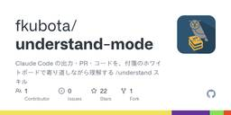
GitHub - fkubota/understand-mode: Claude Code の出力・PR・コードを、付箋のホワイトボードで寄り道しながら理解する /understand スキル 19 はてなブックマーク - 人気エントリー - テクノロジー
You signed in with another tab or window. Reload to refresh your session. You signed out in another tab or window. Reload to refresh your session. You switched accounts on another tab or window. Reloa
9時間前

超難問「リーマン予想」AIと証明か 米アンソロピックの数学者発表：朝日新聞 19 はてなブックマーク - 人気エントリー - テクノロジー
米国の人工知能（AI）開発企業アンソロピックの数学者は20日、「（同社のAIモデル）クロードと共同で、リーマン予想の証明を発見した」と個人サイト上で明らかにした。リーマン予想は数学の難問で、解決に1…
14時間前

Ruby の脆弱性 CVE-2026-132825(Ruby2Shell)についてまとめてみた 30 piyolog
2026年11月18日、Ruby は文字列の大文字小文字変換に見つかった脆弱性(CVE-2026-132825、通称 Ruby2Shell)を修正した版を公開しました。ここでは関連する情報をまとめます。どんな脆弱性が確認されたの?Ruby の文字列の大文字小文字変換に、1バイトのヒープバッファオーバーフローが確認された。ISO-8859-1 や Windows-1252 などの一部の1バイト文字コ
1日前
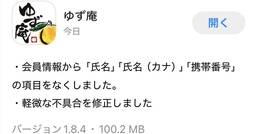
「焼肉きんぐ」「ゆず庵」など11アプリ、会員の氏名・電話番号の項目を廃止 予定を前倒し 30Menthas #all
物語コーポレーションは11月19日、「焼肉きんぐ」「ゆず庵」などグループの公式アプリ計11本で、会員情報から氏名と電話番号の項目をなくしたとITmedia NEWSの取材に回答した。
1日前
AIが追加学習なしで自らのウェイトを書き換えて「自分自身を賢くする」ことに成功 29 GIGAZINE
大規模言語モデル(LLM)は通常、学習が完了すると内部のウェイト(重み)が固定され、性能を向上させるには追加学習などが必要になります。こうした従来の仕組みとは異なり、AIが自分自身のウェイトを分析して書き換え、性能を向上させられることを示した研究論文が発表されました。研究チームは、この成果がAIによる「再帰的自己改善」の実現につながる可能性があるとしています。続きを読む...
1日前
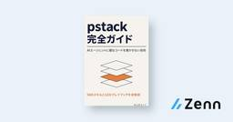
pstack 完全ガイド ─AIエージェントに雑なコード を書かせない技術─ 47 Zennのトレンド
AIエージェントに仕事を頼むと、自信満々の報告と一緒に検証されていない大量のコードが届いて困ったことはありませんか？AIエージェントを使い始めた人はもちろん、日常的に使いこなしているエンジニアでも、「どうすれば品質を担保できるのか」「どこまで自律的に仕事を任せられるのか」という疑問は共通の課題ではないでしょうかpstack は、元React コアチームのエンジニア poteto（Lauren Ta
3日前
[アップデート] AWS STS の GetScopedCredentials で権限と有効期間を絞った認証情報を作ってみた 27 DevelopersIO
AWS STS に追加された GetScopedCredentials を AWS CLI から呼び出し、ID を変えずに権限と有効期間がどう絞られるのかを検証しました。また、絞り込みを重ねたときの上限や必要な許可も確かめてみました。
1日前

MetaのAIアシスタント搭載小型デバイス「Muse Charm」の価格は4万円台か 26 GIGAZINE
2026年12月のホリデーシーズンまでに発売されると予想されているMetaのAIアシスタント搭載小型デバイス「Muse Charm」が300ドル(約4万7700円)ほどになると、ニュースサイト・The Informationが報じました。Metaはこの数字を否定していません。続きを読む...
2日前

マイクロソフト、AIによるサイバー攻撃にAIエージェントで対抗する新サービス「Microsoft Perception」提供開始 85 Publickey
Publickey
マイクロソフトは日本時間11月18日未明に開幕した年次イベント「Microsoft Ignite 2026」で、AIによるサイバー攻撃に対抗するためのAIエージェントによる新サービス「Microsoft Perception」の提供開始を発...
3日前

アプリケーションエンジニアの考えるセキュリティ対策（考え方と共通の前提） | フューチャー技術ブログ 43 Menthas #all
Menthas #all
アプリケーションエンジニアやアーキテクトがセキュリティのために何を考え、どこに手を打つべきかを、実務の目線から整理する初回です。プロトコルとプロダクトを知って組み合わせを見極めるという考え方と、どの層にも共通する2つの前提（言語・フレームワーク・部品を最新に保つこと、セキュアプログラミングの型を外さないこと）をまとめます。
2日前

Appleの会話要約AI「Siri Recap」を2週間使った結果「自分が救急搬送された」という架空の記録が生成される 24 GIGAZINE
IT系ニュースサイトのThe VergeがApple Watchで周囲の会話を自動的に要約する新機能「Siri Recap」を2週間にわたって試した体験談を公開しました。続きを読む...
1日前

北海道3市町委託先のマルウェア感染についてまとめてみた 24 piyolog
2026年11月18日から19日にかけて、北海道の岩見沢市、新得町、留萌市が委託先の協力会社の端末がマルウェアに感染し、委託したデータが漏えいした可能性があると公表しました。ここでは関連する情報をまとめます。3市町の委託データに漏えいのおそれ岩見沢市と新得町は2026年11月18日、留萌市は19日に、GIS北海道に委託した業務のデータが漏えいしたおそれがあると公表。データはGIS北海道の協力会社で
2日前
AIが数学の未解決問題「リーマン予想」を証明か 米アンソロピックの数学者が主張 - BBCニュース 14 はてなブックマーク - 人気エントリー - テクノロジー
はてなブックマーク - 人気エントリー - テクノロジー
米AI開発大手アンソロピックに所属する数学者が20日、AIチャットボットを使い、未解決の数学の難問「リーマン予想」を証明したと主張した。数学者レヴェント・アルポーゲ氏が、自身のウエブサイトで発表した。同社のAIチャットボット「クロード」を使い、6週間で証明に成功したという。アンソロピックは19日、ハイテク株...
14時間前
［速報］マイクロソフト、コーディング用AIモデルとして高性能かつ低価格「MAI Code 2」「MAI Code 2 Flash」発表 71 Publickey
マイクロソフトは日本時間11月18日未明に開幕した年次イベント「Microsoft Ignite 2026」で、同社が開発したコーディング用AIモデルのフラグシップで高性能かつ低価格を売り文句とする「MAI Code 2」と、さらに安価な「...
4日前
ネットもLINEも非対応の「INFOBAR ZERO」は誰が買う？ 3万2780円の価値や向き合い方を考える 12Menthas #all
KDDIが発表した「INFOBAR ZERO」は、インターネットやLINEに非対応で通話とSMSに特化した異色の端末だ。価格は3万2780円で12月25日に発売され、povo2.0やセカンドナンバーなど柔軟な回線運用にも対応する。開発陣の発言を手掛かりに、本機の割り切った仕様と価格に納得できるターゲット像を探る。
1日前
「焼肉きんぐ」「ゆず庵」など11アプリ、会員の氏名・電話番号の項目を廃止 予定を前倒し 30ITmedia NEWS セキュリティ 最新記事一覧
物語コーポレーションは11月19日、「焼肉きんぐ」「ゆず庵」などグループの公式アプリ計11本で、会員情報から氏名と電話番号の項目をなくしたとITmedia NEWSの取材に回答した。
2日前

ログの種別を整理して、何をどこまで残すか決めた話 | DRESS CODE TECH BLOGのフィード 30 企業テックブログRSS
こんにちは。Dress Code株式会社でプロダクトエンジニアをしているぽこひで（@pokohide）です。今日（11/19）は、グラセフの発売日なので有給をとっている方も多いかもしれませんね。空き時間にでも読んでもらえると嬉しいです。Dress Code株式会社は、2024年9月に設立された、人・採用・総務・IT などの領域を統合管理するワークフォースマネジメントプラットフォーム「DRESS C
3日前

ドリームキャストにNINTENDO 64のカートリッジを挿してゲームをプレイ可能にする「DreamCart 64」を開発する猛者が登場 17 GIGAZINE
セガのGD-ROMドライブ搭載型家庭用ゲーム機であるドリームキャストに、任天堂のゲーム機・NINTENDO 64のカセットROMを接続してプレイできるように改造したと、レトロゲームを中心にさまざまな改造を行うYouTuberのThroaty Mumbo氏がムービーで報告しています。続きを読む...
1日前

Introducing the new AWS WAF security analytics dashboard 17 AWS Security Blog
AWS Security Blog
When blocked requests spike or a customer reports being locked out, a security team has to work out what is happening, where it is happening, and if AWS WAF is making the right call. Currently, that u
2日前


PR が1年で5倍になった monorepo で、フロントエンドの基盤をつくる — バクラク Frontend Enabling を募集しています | LayerX エンジニアブログ 28 企業テックブログRSS
企業テックブログRSS
はじめに バクラク事業部のエンジニアの ypresto です。 今日はバクラクで募集している Frontend Enabling というポジションについて紹介させてください！ バクラクでは原則としてJavaScriptとGoのソースコードをmonorepoで管理しています。JavaScript のパッケージも今120を超えています！ リポジトリ全体でマージされた PR は、1年前の月 1000 件
3日前

スーパーコンピューター「富岳」への不正アクセスについてまとめてみた 202 piyolog
2026年11月16日、スーパーコンピューター「富岳」が外部から不正アクセスを受けたことが明らかになりました。理化学研究所は同日に公表し、利用者には前日にメールで通知しています。ここでは関連する情報をまとめます。公開ダッシュボードから内部システム侵入理研が運用する富岳の運用系システムに、外部の第三者が10日から13日にかけて侵入(出典: 1)。*1理研の調査で判明した攻撃の内容は次のとおり(出典:
5日前

[ITmedia News] Google、宇宙AIデータセンター構想「Project Suncatcher」でベゾス氏のBlue Originと提携 2029年に衛星打ち上げへ 16ITmedia 総合記事一覧
Googleは、衛星軌道上にAIデータセンターを構築する「Project Suncatcher」でジェフ・ベゾス氏率いる米Blue Originと提携したと発表した。2029年第1四半期を目標に、大型ロケット「New Glenn」で衛星を太陽同期軌道へ打ち上げる。各衛星はデータセンターのラック1本分程度の計算能力を持つとしている。
2日前

毎月6,000 AI Agentsを捌くためにキーボードを捨てた話 124
Zennのトレンド
カーナベル株式会社で開発統括兼Microservices Platform OwnerをやっているAndyです。最近はOrca ADEの便利さに脳を焼かれています。8月からgit worktreeとorca workspaceを活用した開発スタイルに完全移行し、今では毎月 6,000 セッションほど動かすようになりました。主に利用しているのはClaudeとCodexです。1日200セッション前後で
5日前
「AIが私を追い越した」 リーマン予想「証明」の数学者自身も驚き：朝日新聞 9 はてなブックマーク - 人気エントリー - テクノロジー
人工知能（AI）の力を借りて、167年来の難問「リーマン予想」を証明した――。米国の数学者が20日明らかにした発表で、数学界に衝撃が走っている。リーマン予想とはそもそもどんな難問なのか。証明を発表し…
8時間前

Introducing Inkling 2 Mini 9 はてなブックマーク - 人気エントリー - テクノロジー
Today we are releasing Inkling 2 Mini, a fast, powerful model that’s small enough to run on your laptop. Inkling 2 Mini is a looped transformer, running the middle layers of the model three times for
19時間前
インクリング 2 ミニ 9 Hacker News - Japanese
📝 Inkling 2 Mini は、DeepSWE v1 などのベンチマークで合計パラメーターが 100B 未満のすべてのオープンウェイト モデルをリードします。 Inkling 2 Mini は、26 の専門家混合モデルです。Inkling 2 Mini を使用してフライト シミュレーターを構築して飛行します。🔤 Original: Inkling 2 Mini🔗 Read more: htt
1日前

[ITmedia PC USER] お財布のヒモが爆散！ A20 Pro搭載の新型「iPad mini」を買って分かった魅力と“惜しい点”
14ITmedia 総合記事一覧
Appleの「iPad mini」が、有機ELやA20 Proチップを備えて久々に大きく進化しました。物欲に負けて自腹で買ったrefeiaさんが、その実力をチェックしたよ。
2日前

[ITmedia News] PHP「緊急」脆弱性、サービス一時停止の動き再び ウマ娘やグラブル、イープラスなど緊急メンテ 13ITmedia 総合記事一覧
「PHP2Shell」への対応以降、脆弱性の修正に合わせ、サービスを止めてメンテナンスする流れができつつある。
2日前

さよなら「Claude Code」 人気AIに愛想を尽かしたエンジニアの意外な移行先：906th Lap 13 ITmedia AI＋ 最新記事一覧
ITmedia AI＋ 最新記事一覧
多くのエンジニアに支持されるコーディングAI「Claude Code」。長年愛用してきたエンジニアが、ある日、あえて無名のコーディングAIへの乗り換えを決めた。使い慣れた人気ツールに別れを告げるほどの問題とは何だったのか。
2日前
さよなら「Claude Code」 人気AIに愛想を尽かしたエンジニアの意外な移行先：906th Lap | ITmedia AI＋ 最新記事一覧 13 AI情報RSS
多くのエンジニアに支持されるコーディングAI「Claude Code」。長年愛用してきたエンジニアが、ある日、あえて無名のコーディングAIへの乗り換えを決めた。使い慣れた人気ツールに別れを告げるほどの問題とは何だったのか。
2日前
アプリケーションエンジニアの考えるセキュリティ対策（考え方と共通の前提） | フューチャー技術ブログ 43 企業テックブログRSS
アプリケーションエンジニアやアーキテクトがセキュリティのために何を考え、どこに手を打つべきかを、実務の目線から整理する初回です。プロトコルとプロダクトを知って組み合わせを見極めるという考え方と、どの層にも共通する2つの前提（言語・フレームワーク・部品を最新に保つこと、セキュアプログラミングの型を外さないこと）をまとめます。
3日前
アプリケーションエンジニアの考えるセキュリティ対策（考え方と共通の前提） | フューチャー技術ブログ 43 AI情報RSS
アプリケーションエンジニアやアーキテクトがセキュリティのために何を考え、どこに手を打つべきかを、実務の目線から整理する初回です。プロトコルとプロダクトを知って組み合わせを見極めるという考え方と、どの層にも共通する2つの前提（言語・フレームワーク・部品を最新に保つこと、セキュアプログラミングの型を外さないこと）をまとめます。
3日前
アプリケーションエンジニアの考えるセキュリティ対策（考え方と共通の前提） 43
フューチャー技術ブログ
アプリケーションエンジニアやアーキテクトがセキュリティのために何を考え、どこに手を打つべきかを、実務の目線から整理する初回です。プロトコルとプロダクトを知って組み合わせを見極めるという考え方と、どの層にも共通する2つの前提（言語・フレームワーク・部品を最新に保つこと、セキュアプログラミングの型を外さないこと）をまとめます。
3日前
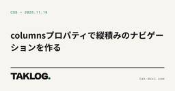
columnsプロパティで縦積みのナビゲーションを作る – TAKLOG 21 はてなブックマーク - 人気エントリー - テクノロジー
フッターに置くリンク集のような、縦に並べたナビゲーションをcolumnsプロパティで段組みにしました。項目は上から下へ読む順番のまま段に分かれ、段の数は幅に応じてブラウザが決めるので、段の数を切り替えるメディアクエリは書いていません。 このリンク集はサイトの導線なので、メニューではなくナビゲーションと呼...
2日前

湘南美容クリニックのSBCグループに不正アクセス、約162万人の個人情報流出 パスワードは暗号化せず保存 21 テクノエッジ TechnoEdge
湘南美容クリニックのSBCグループが不正アクセスで約162万人の個人情報が流出、パスワードを暗号化せず保存。
2日前
湘南美容クリニックのSBCグループに不正アクセス、約162万人の個人情報流出 パスワードは暗号化せず保存 | テクノエッジ TechnoEdge 21 AI情報RSS
湘南美容クリニックのSBCグループが不正アクセスで約162万人の個人情報が流出、パスワードを暗号化せず保存。
2日前


なぜヘンリーのE2Eリポジトリは整理されないまま膨らみ続けたのか。 AIで加速した開発とガードレール - 株式会社ヘンリー エンジニアブログ 40 はてなブックマーク - 人気エントリー - テクノロジー
はてなブックマーク - 人気エントリー - テクノロジー
株式会社ヘンリーでソフトウェアエンジニアをしているwarabiです。 ヘンリーではAIを使った開発体制の改善についてさまざまな取り組みを行ってきましたが、それらの積み重ねもあり今ではエンジニアだけでなくデザイナーやQAメンバーなどからもPull Requestが作れる状況となっています。 AIによってさまざまな職種のメン...
4日前
なぜヘンリーのE2Eリポジトリは整理されないまま膨らみ続けたのか。 AIで加速した開発とガードレール | 株式会社ヘンリー エンジニアブログ 40 企業テックブログRSS
AI活用によってさまざまな職種のメンバーが多くのPRを出せるようになった一方で、リポジトリ全体を継続的に整理する仕組みは十分に整っていませんでした。今回はヘンリーのE2Eリポジトリで生じた課題と対応について紹介します。
4日前
なぜヘンリーのE2Eリポジトリは整理されないまま膨らみ続けたのか。 AIで加速した開発とガードレール | 株式会社ヘンリー エンジニアブログ 40 AI情報RSS
株式会社ヘンリーでソフトウェアエンジニアをしているwarabiです。ヘンリーではAIを使った開発体制の改善についてさまざまな取り組みを行ってきましたが、それらの積み重ねもあり今ではエンジニアだけでなくデザイナーやQAメンバーなどからもPull Requestが作れる状況となっています。AIによってさまざまな職種のメンバーが多くのPRを出せるようになった一方で、リポジトリ全体を継続的に整理する仕組み
4日前
なぜヘンリーのE2Eリポジトリは整理されないまま膨らみ続けたのか。 AIで加速した開発とガードレール 40 株式会社ヘンリー エンジニアブログ
株式会社ヘンリーでソフトウェアエンジニアをしているwarabiです。ヘンリーではAIを使った開発体制の改善についてさまざまな取り組みを行ってきましたが、それらの積み重ねもあり今ではエンジニアだけでなくデザイナーやQAメンバーなどからもPull Requestが作れる状況となっています。AIによってさまざまな職種のメンバーが多くのPRを出せるようになった一方で、リポジトリ全体を継続的に整理する仕組み
4日前
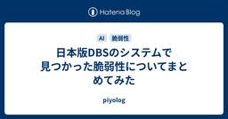
日本版DBSのシステムで見つかった脆弱性についてまとめてみた 20 piyolog
2026年11月18日、こども政策担当相は日本版DBSの専用システム「こまもろうシステム」で深刻な脆弱性が多数見つかったとして、システムでの運用を当面行わないと表明しました。ここでは関連する情報をまとめます。日本版DBSの手続を担う「こまもろうシステム」「日本版DBS」を含むこども性暴力防止法は2026年12月25日に施行される。犯罪事実確認、定期報告、認定などの手続は開発中の専用システム「こまも
3日前
楽天証券漏えい、“テスト環境に顧客情報”のマズさ 識者「一般的でない」 20ITmedia NEWS セキュリティ 最新記事一覧
第三者による不正アクセスを受け、最大約1125万口座分のIDや、約447万口座分の口座情報などが漏えいした可能性があると発表した楽天証券。テスト環境のシステム内で管理していた情報の一部が外部に漏えいした可能性があるという。ただ、識者はテスト環境で顧客情報を管理する状況を「一般的でない」と指摘する。
3日前

Unauthenticated Remote Code Execution in NGINX: CVE-2026-123633 and CVE-2026-123007 38 Wiz Blog | RSS feed
Wiz Blog | RSS feed
Two critical HTTP/2 flaws can allow attackers to compromise NGINX servers, putting the websites, APIs, and sensitive data they handle at risk.
3日前

AWS STS announces GetScopedCredentials to scope down permissions at runtime - AWS 7 Menthas #all
Discover more about what's new at AWS with AWS STS announces GetScopedCredentials to scope down permissions at runtime
14時間前

Microsoftの「Agent Framework」が侵害され、認証情報を盗む不正版がPyPIで公開 19ITmedia NEWS セキュリティ 最新記事一覧
MicrosoftのAIエージェント開発用SDK「Microsoft Agent Framework」のPythonパッケージが侵害され、認証情報を盗む不正版「1.26.1」「1.26.2」がPyPIで一時公開された。Python起動時に自動実行され、クラウドやGitHubの認証情報を外部へ送信する。両版は削除済みで、影響環境での認証情報再発行や環境再構築が呼び掛けられている。
3日前

軽量なマイクロVMでネイティブよりアプリを高速起動できる「Hyperlight-Unikraft」登場 84 Publickey
Cloud Native Computing Foundationは、Linuxアプリケーションを再コンパイルや再ビルドすることなくそのまま、Unikernelのような軽量かつセキュアな実行環境で仮想マシンによる堅牢な隔離環境で実行できるM...
5日前

プレイドのCXプラットフォーム「KARTE」への不正アクセスについてまとめてみた 83 piyolog
2026年11月16日、プレイドは同社が提供するCXプラットフォーム「KARTE」*1 への第三者による不正アクセスにより、利用企業のアカウント情報などが漏えいしたと公表しました。ここでは関連する情報をまとめます。サーバーの脆弱性を悪用し認証情報の窃取プレイドは11月13日、KARTEへの第三者による不正アクセスを検知したとして全サービスの停止を公表(出典: 1, 2)。さらに16日に情報の漏えい
4日前

[ITmedia News] 日本で受け入れられるのか？ ネットにつながらない携帯「INFOBAR ZERO」 KDDIが語った発売の意図 10ITmedia 総合記事一覧
KDDIが11月18日に発表した、音声通話とSMSに機能を絞った携帯電話「INFOBAR ZERO」。スマートフォンが普及したいま、挑戦的とも思える商品だが、売れる見込みはあるのか。
2日前

"リーマン予想の証明"の検証は現在どこまで進んでいるか｜加藤文元 6 はてなブックマーク - 人気エントリー - テクノロジー
（2026年11月21日夜現在。時刻は特に断らない限り日本時間。Andrew Sutherland氏の公開検証記録の最終更新、11月21日21時55分＝同日12時55分 UTCに基づく。） 2026年11月20日、Anthropicの数学者Levent Alpöge氏が、Claudeとともにリーマン予想を証明したと発表した。公表されたのは、わずか4ページの声明と、Leanという...
4時間前

形式検証を活用した脆弱性診断LLMのプロトタイプをEthereum Foundationに納品｜Nyx Foundation 6 はてなブックマーク - 人気エントリー - テクノロジー
Nyx Foundationは、Ethereum FoundationのSecurity Grantのもとで、LLMを使った脆弱性診断ツールSPECAを開発し、プロトタイプを納品しました。仕様書から診断の確認項目を作り、その条件を実装が満たすかを調べる仕組みです。形式検証で記述・証明した性質を、診断の確認項目へつなぐ機能も整備しています。 ソフトウェ...
11時間前

物流代行サービス「オープンロジ」への不正アクセスについてまとめてみた 16 piyolog
2026年11月11日、物流代行サービスのオープンロジは同社のシステムが外部の第三者による不正アクセスを受け、保有する出荷データに含まれるお届け先の個人情報などが外部に持ち出されたと公表しました。その後、荷主や委託元の多数が自社の顧客や届け先への影響や影響の可能性を公表しています。ここでは関連する情報をまとめます。出荷データの一部持ち出しオープンロジは11月11日の第1報で不正アクセスと出荷データ
2日前
tsrs を導入したら oxlint の type-aware linting と typecheck が爆速になった話 30 Zennのトレンド
はじめにこんにちは。ぷーじ（@yug1224）です。以前の記事で、フロントエンドとバックエンドに oxlint、oxfmt、tsgo を入れた話を書きました。https://zenn.dev/dress_code/articles/d655cd7a43b936その後も type-aware linting と typecheck は CI の中で重いステップのままで、キャッシュが外れるとバックエン
3日前
tsrs を導入したら oxlint の type-aware linting と typecheck が爆速になった話 | DRESS CODE TECH BLOGのフィード 30 企業テックブログRSS
はじめにこんにちは。ぷーじ（@yug1224）です。以前の記事で、フロントエンドとバックエンドに oxlint、oxfmt、tsgo を入れた話を書きました。https://zenn.dev/dress_code/articles/d655cd7a43b936その後も type-aware linting と typecheck は CI の中で重いステップのままで、キャッシュが外れるとバックエン
3日前

AIに打ち明けた相談は“広告トラッカー”に筒抜け？ ChatGPT、Claude、Gemini含む42サービスを米大が調査 70ITmedia NEWS セキュリティ 最新記事一覧
米ニューヨーク州立大学ストーニーブルック校に所属する研究者らが発表した論文「Penny for Your Prompts: A Measurement Study of Contextual Leakage in AI Chat Platforms」（IEEE S&P 2027採択）は、AIチャットbotに入力した会話内容や個人情報が、サイト内の追跡プログラム（トラッカー）を通じて外部企業へ漏えい
5日前
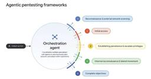
Google、人間の関与なしに脆弱性を見つけて悪用するAIフレームワークを初めて観測 GTIGのAI脅威レポート 110ITmedia NEWS セキュリティ 最新記事一覧
Googleは、AIを悪用したサイバー攻撃の動向をまとめた四半期レポートを公開した。攻撃者が複数のAIエージェントを組み合わせ、自律的に脆弱性の発見から攻撃までを実行するフレームワークが初めて確認された。偽プロフィールによる標的への接近や世論工作の自動化、LLMJackingの被害拡大なども報告している。
5日前

認証なしでリモートコード実行の恐れ、Javaに脆弱性「Java4Shell」 JiraやJenkinsで攻撃実証の報告も 15ITmedia エンタープライズ「セキュリティ」 最新記事一覧
米CISAは、Javaの実行環境に見つかった脆弱性「Java4Shell」の修正を直ちに適用するよう組織に求めた。IPAも注意喚起を公開している。影響を受けるのはどのような環境か。修正をすぐに適用できない場合の手段は何か。
3日前

PostgreSQL 19 Released! 15 PostgreSQL news
PostgreSQL news
November 19, 2026 - The PostgreSQL Global Development Grouptoday announced the release of PostgreSQL 19,the latest version of the world's most advanced open source database.Mission-critical usage of P
3日前

Node.jsとnpmをWebブラウザ上で実行可能にする「OpenVessel」、神戸ソフトがオープンソースで公開 104 Publickey
神戸ソフトは、Webブラウザ上でNode.jsとパッケージマネージャのnpm、AstroなどのNode.jsに対応したフレームワークなどが実行できる「OpenVessel」をオープンソースで公開しました。 OpenVesselは、Webブラ...
5日前

Welcome! You are invited to join a webinar: 【26/11/26開催】「脱WordPress」に取り組みたい方へ。セキュリティ懸念・運用負担を解消するSaaS型CMS移行. After registering, you will receive a confirmation email about joining the webinar. 14
はてなブックマーク - 人気エントリー - テクノロジー
「“WordPressに重大な脆弱性”というニュースを見て、うちのサイトは大丈夫かと不安になった」「情シスからWordPressの見直しを求められているが、何から手をつければいいかわからない」「お知らせを1件直すだけなのに、制作会社に依頼して1週間待った」——WordPressのサイトを運用していて、そんな経験はありませんか？ ...
3日前
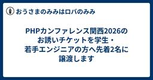
PHPカンファレンス関西2026のお誘いチケットを学生・若手エンジニアの方へ先着2名に譲渡します - おうさまのみみはロバのみみ 8 はてなブックマーク - 人気エントリー - テクノロジー
2027年1月16日（土）に開催される PHPカンファレンス関西2026 の「お誘いチケット」を、参加したい学生・若手エンジニアの方に先着2名まで譲ります。チケット代はぼくが負担するので、受け取る方の費用はかかりません。 2026.kphpug.jp お誘いチケットとは 2枚以上まとめて購入すると1枚あたり500円安くなるチケットで、...
1日前
重力を使って壁越しにメッセージを送信することに成功、遮断がほぼ不可能な通信方法だが1ビット送るのに1分かかる 8 GIGAZINE
オーストラリアのクイーンズランド大学の研究チームが重力の変化を利用してメッセージを送信する実験に成功したと発表しました。続きを読む...
2日前
BlenderのGPUアクセラレーション対応UIを他のアプリケーションから再利用可能にする「BUI」 5 GIGAZINE
BUI(Blender's User Interface)はBlenderの洗練されたユーザーインターフェースを、独立したUIライブラリとして再利用可能にするプロジェクトです。続きを読む...
15時間前

日本でも「ダムフォン」は広がるか？ KDDIが「INFOBAR ZERO」で目指す2台持ちの新しい形 5はてなブックマーク - 人気エントリー - テクノロジー
日本でも「ダムフォン」は広がるか？ KDDIが「INFOBAR ZERO」で目指す2台持ちの新しい形：石野純也のMobile Eye（1/2 ページ） KDDIは、オープンマーケットモデル（SIMフリーモデル）を販売する「au Flex Style」を通じて、同社自身が企画した「INFOBAR ZERO」を発売する。現在、予約を受け付けており、12月25日に発売...
21時間前
[ITmedia Mobile] 日本でも「ダムフォン」は広がるか？ KDDIが「INFOBAR ZERO」で目指す2台持ちの新しい形 5ITmedia 総合記事一覧
KDDIが通話とSMSに特化した「INFOBAR ZERO」を12月25日に発売する。デジタルデトックスの潮流を背景に、スマホとの2台持ちやブランド価値向上を狙う。海外で拡大するダムフォン市場に対し、日本での新たな選択肢となるか注目される。
21時間前

最近、コードを真面目に読まなくなった 95 Zennのトレンド
最近、コードを真面目に読むことが減りました。AIに実装を任せて、出てきた差分を最初から最後まで丁寧に追う。以前ほど、そういう時間を取らなくなっています。決して、不真面目になったつもりはありません。私の開発では、前提をきちんと整えておけば、AIが出すコードは大体正しいと感じることが増えたからです。大体正しいものを、毎回同じ熱量で読み込む。その時間に、以前と同じだけの意味があるのか。それよりも、AIが
5日前

スパコン「富岳」に不正アクセス 理研が明らかに 94ITmedia NEWS セキュリティ 最新記事一覧
理化学研究所は11月16日、スーパーコンピュータ「富岳」に関するシステムが不正アクセスを受けたと、ITmedia NEWSの取材に対し明らかにした。
6日前

「非公開APIだから安全」はもう通用しない AIが変える脆弱性発見の常識 25＠IT Security&Trustフォーラム 最新記事一覧
「公開していないAPIだから安全」。そんな防御の前提が、AIによって揺らいでいます。公開アプリを解析してバックエンドを狙うA2B攻撃に加え、急増するCVEや悪用までの時間を巡るデータから、AIは攻撃者の能力をどう変えつつあるのでしょうか。公的機関の注意喚起や最新の研究成果を基に、その実態と企業が見直すべき防御の考え方を探ります。
4日前
わが社はChatGPTでどう紹介されている？ OpenAIが企業向けの確認機能を提供開始 7Menthas #all
ChatGPTがユーザーに向けて、自社をどのように紹介しているのかを把握したいと考える企業は多いだろう。OpenAIは、その把握に役立つ機能を企業向けにβ版で公開した。米国の対象企業であれば、自社のAIエージェントをChatGPT広告のリンク先に設定することもできる。
2日前
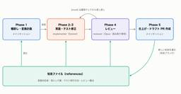
AIを活用したPerlのGo移植（テスト編） | Mirrativ Tech Blog 54 企業テックブログRSS
企業テックブログRSS
こんにちは、バックエンド基盤チームの藤井脩紀です。 バックエンド基盤チームは、バックエンドエンジニアの生産性向上やコスト削減を目的に、エンジニア主導で課題を発見・解決している部署です。 ミラティブのバックエンドはPerlからGoへの移植を進めています。その一環として、Perlで書かれたE2Eテスト250ファイルを約9.5週間でGoに移植し、PerlのE2Eテストをゼロにしました。 移植作業の大部分
5日前

AIモデルとAIエージェントをつなぐ「APIルーター」に注意？ 428件を調べてわかった乗っ取り手口 暗号資産を盗む例も 11ITmedia NEWS セキュリティ 最新記事一覧
米カリフォルニア大学サンタバーバラ校（UCSB）などに所属する研究者らが発表した論文「Your Agent Is Mine: Measuring Malicious Intermediary Attacks on the LLM Supply Chain」は、AIエージェントと外部のAIモデルを仲介する「APIルーター」に潜む危険性を調査した研究報告だ。
3日前

令和8年に「INFOBAR」が復活するも、通話とSMSしかできない「ダムフォン」に 4はてなブックマーク - 人気エントリー - テクノロジー
アクセス数の1位と2位は、KDDIの「au Design project」発のSIMロックフリー携帯電話「INFOBAR ZERO」に関する話題でした。 INFOBARといえば、2001年に「info.bar」としてコンセプトモデルが登場し、2003年に当時の鳥取三洋電機（現在のLIMNO）が開発と製造を手掛けた「INFOBAR」として製品化されました。 これまでのINFO...
11時間前
[ITmedia Mobile] 令和8年に「INFOBAR」が復活するも、通話とSMSしかできない「ダムフォン」に 4ITmedia 総合記事一覧
KDDIの「au Design project」が、平成15年（2023年）に商品化した「INFOBAR（インフォバー）」を令和8年（2026年）の世に復活させました。スマホが当たり前の世の中で、欧米で昨今「ダムフォン」とも呼ばれる「音声通話とSMSしか対応しない携帯電話」として登場します。
12時間前
相次ぐシステム障害、AIはどこまで関係しているのか--「12月はさらに深刻に」と専門家 4はてなブックマーク - 人気エントリー - テクノロジー
なぜ、何もかもが次々と止まるのか。そんな記事を書こうと思いながら、なかなか書けずにいた。何もかもが次々と止まるからだ。 米マイクロソフトの「Outlook」はしばらく使えなくなり、航空管制システムでもトラブルが起きた。米チェース銀行の利用者にとって、11月16日（現地時間）は踏んだり蹴ったりの月曜日だった。...
18時間前
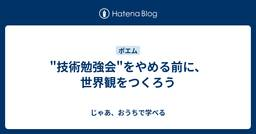
"技術勉強会"をやめる前に、世界観をつくろう 21 じゃあ、おうちで学べる
kotowazamanさんのQiitaの記事を読みました。 qiita.com 調べれば分かる一般的な知識を、誰かがまとめて発表するだけの社内勉強会は、AIに聞けば済む時代にはやめてしまおう。そういう主張の記事です。書かれている内容には、一部賛成です。冒頭の会議室では、発表を聞く9人が手元のSlackで返信し、質疑に入って5秒ほどたつと、ふだんからよく話す1人が当たり障りのない質問をします。残業続
4日前

［速報］PostgreSQL互換のサーバレスでOLTPとOLAP両対応を実現する「Microsoft Fabric HorizonDB」パブリックプレビュー 21 Publickey
マイクロソフトは日本時間11月18日未明に開幕した年次イベント「Microsoft Ignite 2026」で、PostgreSQL互換のサーバレスデータベース「Microsoft Fabric HorizonDB」のパブリックプレビュー版...
4日前

Cloudflare、AI専用でタブやテーマや拡張などない軽量ヘッドレスブラウザ「Kitesurf」、オープンソースで公開 76 Publickey
Cloudflareは、AIエージェントが操作することを想定した軽量のヘッドレスブラウザ「Kitesurf」をオープンソースで公開したと発表しました。 Kitesurf is now open source on GitHub under ...
6日前
GoogleやAppleなどのアカウント乗っ取りでPayPay不正利用の事例 サポートが注意喚起 6はてなブックマーク - 人気エントリー - テクノロジー
PayPay公式サポートが、Xにて外部連携先の乗っ取りによる不正利用被害について、注意喚起している。 同社によると、Google、Apple、Yahoo!JAPANなどのアカウントが乗っ取られたことで、これらアカウントで登録しているPayPayが不正に利用される事例が直近で確認されているという。 PayPayではApple ID、Googleアカウント...
1日前
[ITmedia Mobile] GoogleやAppleなどのアカウント乗っ取りでPayPay不正利用の事例 サポートが注意喚起 6ITmedia 総合記事一覧
PayPay公式サポートが、外部連携先の乗っ取りによる不正利用被害について、注意喚起している。PayPayではApple ID、Googleアカウント、Yahoo!JAPAN IDと連携してログインすることができる。各サービスのアカウントで二段階認証の設定をする、パスワードの使い回しをしないといった対策が求められる。
1日前

「Muse」専用メアド、無料で作成可能に AIが送受信を代理 6ITmedia AI＋ 最新記事一覧
米Metaは、AIエージェント「Muse」専用のメールアドレスについて、無料ユーザーを含む全ユーザーが取得できるようになったと発表した。
1日前
「Muse」専用メアド、無料で作成可能に AIが送受信を代理 | ITmedia AI＋ 最新記事一覧 6AI情報RSS
米Metaは、AIエージェント「Muse」専用のメールアドレスについて、無料ユーザーを含む全ユーザーが取得できるようになったと発表した。
1日前

ChatGPT「Plus」プラン一部ユーザーに「dots」解禁 「Business Standard」全ユーザーにも 6ITmedia AI＋ 最新記事一覧
OpenAIは「ChatGPT」の「Plus」プランユーザーの一部向けに、同社の常時稼働型エージェント「dots」の提供を開始する。
2日前
ChatGPT「Plus」プラン一部ユーザーに「dots」解禁 「Business Standard」全ユーザーにも | ITmedia AI＋ 最新記事一覧 6AI情報RSS
OpenAIは「ChatGPT」の「Plus」プランユーザーの一部向けに、同社の常時稼働型エージェント「dots」の提供を開始する。
2日前

日本で最も使われているパスワードは「pass1111」 NordPass調査 20ITmedia NEWS セキュリティ 最新記事一覧
パスワード管理ツールのNordPassは、よく使われているパスワードのランキング2026年版を公開した。日本の1位は「pass1111」で、世界1位の「123456」は日本では4位だった。
3日前
マイクロソフト、AIが生成したアプリを企業内で安全に実行するランタイム「Copilot Managed Runtime」正式リリース 19 Publickey
マイクロソフトは日本時間11月18日未明に開幕した年次イベント「Microsoft Ignite 2026」で、AIが生成したアプリなどを企業内で安全に実行するための基盤となる「Copilot Managed Runtime」の正式リリース...
3日前

リモートコーディングエージェント yoro で始めるループエンジニアリング | LayerXのフィード 18 企業テックブログRSS
みなさん、おはようございます、こんにちは、こんばんは Ai Workforce 事業部 プロダクト部 Platform Enablement グループ 吉井 亮です。テクニカルプロジェクトマネージャーというロールで日々プロダクトの価値向上に邁進しています。当記事では Ai Workforce 事業部のリモートコーディングエージェント環境である yoro を使ったループエンジニアリングを紹介します。
4日前
リモートコーディングエージェント yoro で始めるループエンジニアリング 18 LayerXのフィード
みなさん、おはようございます、こんにちは、こんばんは Ai Workforce 事業部 プロダクト部 Platform Enablement グループ 吉井 亮です。テクニカルプロジェクトマネージャーというロールで日々プロダクトの価値向上に邁進しています。当記事では Ai Workforce 事業部のリモートコーディングエージェント環境である yoro を使ったループエンジニアリングを紹介します。
4日前
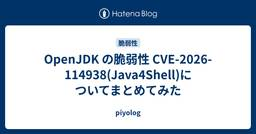
OpenJDK の脆弱性 CVE-2026-114938(Java4Shell)についてまとめてみた 17 piyolog
2026年11月17日、OpenJDK は Java の実行環境 HotSpot における Base64 デコード処理の脆弱性(CVE-2026-114938、通称 Java4Shell)の修正と脆弱性情報を公開しました。ここでは関連する情報をまとめます。どんな脆弱性が確認されたの?HotSpot の Base64 デコード処理のうち、x86-64 向けの AVX-512 VBMI 組み込み実装に
3日前
VPN通信に使うWireGuardやOpenVPNをターミナルUIの1画面で管理できる「Vortix」、マルチトンネル制御・リアルタイムテレメトリ・リークガード機能を搭載 5 GIGAZINE
複数のVPNを利用していると接続先ごとに異なるアプリやコマンドを使い分ける必要があり、通信状態や通信経路の確認も複雑になります。そこでWireGuard・OpenVPNなどの接続管理を一つの画面にまとめ、通信速度・遅延のリアルタイム監視・情報漏えいの検出・VPN切断時の通信遮断まで行える無料のオープンソースツールが「Vortix」です。続きを読む...
1日前
無料でセルフホストできWindows・macOS・LinuxアプリもあるRSSリーダー「WyrmRSS」、YouTube動画の再生やDiscord・Slackへの新着通知も可能 3 GIGAZINE
ニュースサイトやブログなどの更新情報をまとめて取得できるほか、YouTube動画の再生・フィルター・外部サービスへの新着通知にも対応した無料のオープンソースRSSリーダーが「WyrmRSS」です。セルフホストに加えてWindows・macOS・Linux用のアプリも提供されているので実際に使ってみました。続きを読む...
4時間前
ヒヨコの脳細胞は酸素が極めて少なくても2時間以上生き延びる 3 GIGAZINE
人間の脳に酸素が届かなくなると一部の脳細胞は数分で死に始めます。ところが、アメリカのウェイクフォレスト大学の研究チームがヒヨコの脳組織を調べたところ、酸素が極めて少ない状態でも2時間以上にわたって電気信号を出し続ける神経細胞が見つかりました。続きを読む...
5時間前

［速報］AIがOracle DBからPostgreSQLへの移行を支援、「Azure Database Migration Service」プレビュー 16 Publickey
マイクロソフトは日本時間11月18日未明に開幕した年次イベント「Microsoft Ignite 2026」で、Azure Database Migration Service （Azure DMS）におけるOracle DBからPostg...
4日前

マイクロソフト、クラウドやオンプレミスのデータベースを一元管理する「Database Hub」正式リリース。AIエージェントによる運用監視の自動化も 8 Publickey
マイクロソフトは日本時間11月18日未明に開幕した年次イベント「Microsoft Ignite 2026」で、Microsoft Azureやオンプレミス、他社クラウドにあるデータベースなど、管理者が権限を持つデータベースを自動的に一覧表...
2日前

PHPが再び重大脆弱性を修正へ 10月の“緊急対応”と今回は何が違うのか 8ITmedia エンタープライズ「セキュリティ」 最新記事一覧
PHPのセキュリティチームが、サポート中の全バージョンに影響する脆弱性の修正を予告した。公開は日本時間2026年11月19日夜。最も高い深刻度は「Critical」だが、該当する条件は限られるという。10月に修正された2件の脆弱性とは何が違うのか。
3日前
内製 Background Agent “haro”に アラート対応を任せたら 回すたびに賢くなっていった | LayerX エンジニアブログ 37
企業テックブログRSS
LayerXに新卒入社したエンジニアが社内の Background Coding Agent「haro」を用いてアラート対応を行った話
5日前

Agent Optimizerを使ってHosted Agentを最適化する | Taste of Tech Topics 15 企業テックブログRSS
企業テックブログRSS
1. はじめに こんにちは、2年目エンジニアの飯棲です。 最近は自宅で電子サックスを吹くことにハマっています。 前回の記事では Microsoft Foundry の Hosted Agent を使って、エージェントをデプロイしました。 acro-engineer.hatenablog.com 今回は Hosted Agent を改善するための機能である Agent Optimizer を試してみ
4日前
Introducing Amazon OpenSearch Memory: Persistent memory for AI agents 7 AWS Big Data Blog
Amazon OpenSearch Memory is now generally available. Built on Amazon OpenSearch Serverless, it adds persistent, cross-session memory to AI agents. It stores interactions as searchable events, derives
3日前

AIエージェントを騙す：一見安全だが危険なGitHubリポジトリをAIエージェントにセットアップさせてみた（インターンシップ体験記） | NTT docomo Business Engineers' Blog 4 企業テックブログRSS
企業テックブログRSS
こんにちは、NTTドコモグループの現場受け入れ型インターンシップに参加した、中里と下坂です。 本記事では、私たちが参加した、「攻撃者視点に立ち攻撃技術を研究開発するセキュリティエンジニア」ポストでの取り組みについて紹介します。 NTTドコモグループのセキュリティ業務や、Offensive Securityに興味を持っている方へのご参考になれば幸いです。 なお本記事は、将来の脅威を理解し、防御策の検
1日前
欧州委員会がAIを用いたサイバー攻撃の標的になったことを発表 4 GIGAZINE
EUの行政執行機関である欧州委員会(EC)が、AIツールを使用したサイバー攻撃の標的になったことを、2026年11月19日に認めました。ECの報道官は「調査は進行中で、事件の規模を判断するのは難しい」と会見で述べています。続きを読む...
2日前
Windows Server 2028がパブリックプレビュー公開。Microsoft FoundryなどAIによる推論の実行基盤へと拡張 13 Publickey
マイクロソフトは日本時間11月18日未明に開幕した年次イベント「Microsoft Ignite 2026」で、次期サーバ向けOSとなるWindows Server 2028のパブリックプレビュー公開を発表しました。 企業内のAI推論基盤へ...
3日前
mise + gh skill で、dotfiles から Agent Skills を管理する | DRESS CODE TECH BLOGのフィード 29 企業テックブログRSS
はじめにこんにちは。ぷーじ（@yug1224）です。Mac の開発環境は dotfiles で管理していて、Homebrew のパッケージ、言語や CLI のツール、設定ファイルの symlink まで mise で入れています。新しい Mac でも make install を 1 回実行すれば、ほぼ元の環境に戻ります（2 回目以降の入れ直しは make mise）。その dotfiles の中
5日前

［速報］マイクロソフト、PostgreSQL互換のミッションクリティカル向けデータベースサービス「Azure HorizonDB」正式リリース 12 Publickey
マイクロソフトは日本時間11月18日未明に開幕した年次イベント「Microsoft Ignite 2026」で、PostgreSQL互換のミッションクリティカル向けデータベースサービス「Azure HorizonDB」の正式リリースを発表し...
4日前

ちまたの“格安GPT”、中身は偽物？ 非公式APIのモデル偽装を調査した結果…… 6ITmedia NEWS セキュリティ 最新記事一覧
ドイツのCISPAとカナダのウォータールー大学に所属する研究者らが発表した論文「Real Money, Fake Models: Deceptive Model Claims in Shadow APIs」は、LLM（大規模言語モデル）の公式APIを安価に仲介する非公式サービス「シャドーAPI」の実態を調査した研究報告だ。
3日前

GPT-6 CyberでJavaに12年以上未発見の深刻な脆弱性を発見。オラクルはすでにパッチ配布、即時適用を推奨 6 テクノエッジ TechnoEdge
サイバーセキュリティ企業のCalifは、OpenAIの未公開モデル「GPT-6 Cyber」を活用し、プログラミング言語Javaに12年以上にわたって存在していた重大な脆弱性を発見したと発表しました。
3日前
GPT-6 CyberでJavaに12年以上未発見の深刻な脆弱性を発見。オラクルはすでにパッチ配布、即時適用を推奨 | テクノエッジ TechnoEdge 6 AI情報RSS
サイバーセキュリティ企業のCalifは、OpenAIの未公開モデル「GPT-6 Cyber」を活用し、プログラミング言語Javaに12年以上にわたって存在していた重大な脆弱性を発見したと発表しました。
3日前

Google「Gemini 4 Neon」公開、Carbonより1タスク32%安い中位モデル Geminiアプリは有料プランで選択可能 6 テクノエッジ TechnoEdge
GoogleはGemini 4 Neonを公開、1タスクあたりのコストはCarbonより32%安価。アプリ等は有料プランで利用可能。
3日前
Google「Gemini 4 Neon」公開、Carbonより1タスク32%安い中位モデル Geminiアプリは有料プランで選択可能 | テクノエッジ TechnoEdge 6 AI情報RSS
GoogleはGemini 4 Neonを公開、1タスクあたりのコストはCarbonより32%安価。アプリ等は有料プランで利用可能。
3日前


PostgreSQL 19リリース延期の背景。β4で多くの新機能取り下げが発生、原因はAIによるコードレビューか 42 Publickey
オープンソースのリレーショナルデータベース「PostgreSQL」は、先週木曜日（2026年11月12日）に最終リリース候補版となるPostgreSQL 19 RC2が公開され、予定では今週の11月19日に正式リリースとなる見通しです。 そ...
6日前

内製 Coding Agent "haro" と社内 GPU で、探索的テスト AI Agent をぶん回している | LayerX エンジニアブログ 39 企業テックブログRSS
探索的テストを、社内の Background Coding Agent「haro」と、社内 GPU で動かしている Qwen3.8-27B にまかせています。今回はその仕組みと、約 10 時間で 47 本のシナリオを回して分かったこと、そして「全部 Claude で回したらいくらかかるのか」をお話しします。
6日前

RTX Spark搭載ノートPCで画像生成AIや動画生成AIのローカル実行速度を検証した結果が公開される 3 GIGAZINE
RTX SparkはNVIDIAが開発したSoCで、RTX Sparkを搭載したノートPCやミニPCは大規模言語モデルやコンテンツ生成モデルをローカルで実行することができます。そんなRTX Spark搭載ノートPCで画像生成AIや動画生成AIを実行して速度を検証した結果をテクノロジーメディアのLTT Labsが公開しています。続きを読む...
1日前

t9g.medium と t4g.medium の性能を Next.js ビルド・OpenSSL・dd で実測してみた 3 DevelopersIO
Amazon EC2 の t9g.medium と t4g.medium で Next.js ビルド・OpenSSL・dd を実測しました。ビルド時間の中央値は t4g.medium の 34.9 秒に対し t9g.medium は 12.2 秒でした。CPU 情報と CloudWatch のバースト関連メトリクスも確認しています。
1日前

「Codexを用いてChatGPTの高速性を維持する方法」をOpenAIが解説、AIエージェントで工場システムを構築して自律的に改善作業を進める 3 GIGAZINE
OpenAIはChatGPTなどの自社製品の開発にCodexを活用しています。新たに「Codexを用いてChatGPTの高速性を維持する方法」という解説記事が公開されました。続きを読む...
1日前

Hermes Agentの開発企業がMicrosoftと提携して企業向けAIエージェント「Hermes Enterprise」を発表、Teamsから仕事を依頼可能に 3 GIGAZINE
オープンソースのAIエージェント「Hermes Agent」を開発するNous Researchが2026年11月18日にMicrosoftとの提携を発表し、企業向け製品「Hermes Enterprise」を公開しました。Hermes EnterpriseはMicrosoft TeamsからAIに業務を依頼できるほか、AIが覚えた作業手順を社内で共有する機能を備えています。続きを読む...
1日前
Ubisoftが「記憶を持ったNPC」や「AIゲームマスター」を開発する生成AIゲームスタジオ「Motherbrain」を設立 3 GIGAZINE
アサシンクリードシリーズやレインボーシックスシリーズで知られるフランスに本社を置くゲーム会社・Ubisoftが、生成AIの実装に特化したゲームスタジオ「Motherbrain」を設立しました。続きを読む...
1日前

Android開発者認証が2027年1月から世界展開開始 3 GIGAZINE
Googleが「不正行為防止策」と呼び、一部の開発者が「オープンな開発を阻害するもの」と反発するAndroidのセキュリティシステム「開発者認証」が2027年1月から全世界向けに展開され始めます。続きを読む...
2日前

300年分の肖像画486点から判明した女性の「美しさ」の基準の変化とは？ 3
GIGAZINE
イギリスのノーサンブリア大学などの研究チームが1650年から1950年までの約300年間に描かれた486点の肖像画を分析した結果、女性の美しさに関する価値観が現代のマスメディアが登場するよりもはるか以前から変化していたと指摘しています。続きを読む...
2日前
[ITmedia News] 掘らずに地中レーダー探査、AI分析も 奈良文化財研究所が挑む次世代のサイバー考古学 3ITmedia 総合記事一覧
奈良文化財研究所（奈文研、奈良市）が少子高齢化や人件費高騰が進む中、発掘調査方法の見直しを模索している。
2日前

[ITmedia ビジネスオンライン] 日立が「フィジカルAI」で狙う“5年で事業規模2倍”の勝算 3.5万人の新会社トップが語る「戦略の2本柱」とは？ 3ITmedia 総合記事一覧
日立製作所は2027年4月、米国子会社2社を統合し、27カ国・約3万5000人規模のデジタル新会社「Hitachi Digital」を発足させる。CEO兼Chairmanに就任するアナンド・ビルジェ氏が取材に応じ、今後5年で事業規模2倍を見据える戦略を語った。現場に入る精鋭チーム「FDE」を1年で3000人へ3倍増させ、売上の9割を占める上位200～300社への集中でフィジカルAIの覇権を狙う。
2日前
日立が「フィジカルAI」で狙う“5年で事業規模2倍”の勝算 3.5万人の新会社トップが語る「戦略の2本柱」とは？ 3ITmedia AI＋ 最新記事一覧
日立製作所は2027年4月、米国子会社2社を統合し、27カ国・約3万5000人規模のデジタル新会社「Hitachi Digital」を発足させる。CEO兼Chairmanに就任するアナンド・ビルジェ氏が取材に応じ、今後5年で事業規模2倍を見据える戦略を語った。現場に入る精鋭チーム「FDE」を1年で3000人へ3倍増させ、売上の9割を占める上位200～300社への集中でフィジカルAIの覇権を狙う。
2日前
日立が「フィジカルAI」で狙う“5年で事業規模2倍”の勝算 3.5万人の新会社トップが語る「戦略の2本柱」とは？ | ITmedia AI＋ 最新記事一覧 3AI情報RSS
日立製作所は2027年4月、米国子会社2社を統合し、27カ国・約3万5000人規模のデジタル新会社「Hitachi Digital」を発足させる。CEO兼Chairmanに就任するアナンド・ビルジェ氏が取材に応じ、今後5年で事業規模2倍を見据える戦略を語った。現場に入る精鋭チーム「FDE」を1年で3000人へ3倍増させ、売上の9割を占める上位200～300社への集中でフィジカルAIの覇権を狙う。
2日前

Kaigi on Rails 2026 のアンドパッドブースのアンケート結果まとめ | ANDPAD Tech Blog 3 企業テックブログRSS
こんにちは、Ruby コミッタの柴田です。9月の想像以上の長雨と天候不順で秋バラが全然咲きませんでした。とほほ。 さて、2026年10月16日から17日にかけて渋谷のベルサール渋谷ガーデンで開催された Kaigi on Rails 2026 に参加しました。アンドパッドはスポンサーとしてのフローズンドリンクの配布やブースでの企画を通したノベルティプレゼントやアンドパッドの社員との会話の時間を提供さ
2日前
内製 Background Agent "haro" を "haro" の中で開発しターミナルを捨てる | LayerX エンジニアブログ 3 企業テックブログRSS
LayerX では haro という Background Coding Agent を内製しています。僕はこの haro の開発に関わっていて、「haro 自身の開発を haro の中でできるようにする」ことに取り組んできました。チームではこれを haro in haro と呼んでいます。 最初に試した構成は捨てることになり、今は vCluster と Envoy と Telepresence
2日前

[ITmedia News] Mac版「Gemini」にユーザーの代わりにアプリを操作する「computer use」機能追加 まず米国で 3ITmedia 総合記事一覧
Googleは、Mac版「Gemini」アプリにAIが画面を認識してアプリを自動操作する「computer use」機能を追加した。隔離されたバックグラウンドウィンドウで動作するため、ユーザーの作業を妨げずにファイルやWebをまたいだ複数手順の業務を代行できる。まずは米国の有料プラン加入者向けに英語版から提供を始める。
2日前
Mac版「Gemini」にユーザーの代わりにアプリを操作する「computer use」機能追加 まず米国で 3ITmedia AI＋ 最新記事一覧
Googleは、Mac版「Gemini」アプリにAIが画面を認識してアプリを自動操作する「computer use」機能を追加した。隔離されたバックグラウンドウィンドウで動作するため、ユーザーの作業を妨げずにファイルやWebをまたいだ複数手順の業務を代行できる。まずは米国の有料プラン加入者向けに英語版から提供を始める。
2日前
Mac版「Gemini」にユーザーの代わりにアプリを操作する「computer use」機能追加 まず米国で | ITmedia AI＋ 最新記事一覧 3AI情報RSS
Googleは、Mac版「Gemini」アプリにAIが画面を認識してアプリを自動操作する「computer use」機能を追加した。隔離されたバックグラウンドウィンドウで動作するため、ユーザーの作業を妨げずにファイルやWebをまたいだ複数手順の業務を代行できる。まずは米国の有料プラン加入者向けに英語版から提供を始める。
2日前

なぜ中国はヒューマノイドを量産するのか 突き動かす「焦り」と足踏みの正体 3 ITmedia AI＋ 最新記事一覧
中国ではヒューマノイド（ヒト型ロボット）の量産が進んでいる。出荷の拡大がそのまま実用化を意味するわけではないが、日本にまだ勝ち筋はあるのか。SUGENAが開催したセミナーから、中国がロボットに注力する背景や量産の実態、実用化に向けた課題を探り、日本企業が取るべき戦略を考える。
2日前
なぜ中国はヒューマノイドを量産するのか 突き動かす「焦り」と足踏みの正体 | ITmedia AI＋ 最新記事一覧 3 AI情報RSS
中国ではヒューマノイド（ヒト型ロボット）の量産が進んでいる。出荷の拡大がそのまま実用化を意味するわけではないが、日本にまだ勝ち筋はあるのか。SUGENAが開催したセミナーから、中国がロボットに注力する背景や量産の実態、実用化に向けた課題を探り、日本企業が取るべき戦略を考える。
2日前

Amazon Bedrock AgentCore harness adds Strands harness defaults, built-in tools, and lifecycle hooks 3 Artificial Intelligence
Amazon Bedrock AgentCore harness now runs on the open-source Strands harness, bringing a recommended model, task-oriented defaults, automatic prompt caching, proactive context management, and new buil
2日前
【朗報】Microsoft 365 CopilotがOneDriveのファイルを直接編集できるようになってた！CoworkなしでGitHub Copilotみたいに使える件 5 Qiita - 人気の記事
はじめにMicrosoft 365 Copilotくん、いつの間にかめちゃくちゃ進化していました。以前、Copilotのカスタム指示とOneDriveを組み合わせて、AIに自分専用の知識を蓄積させる仕組みを考えていました。ただ、当時はファイルの保存先や既存ファイルの...
3日前
【朗報】Microsoft 365 CopilotがOneDriveのファイルを直接編集できるようになってた！CoworkなしでGitHub Copilotみたいに使える件 5 Microsoftタグが付けられた新着記事 - Qiita
はじめにMicrosoft 365 Copilotくん、いつの間にかめちゃくちゃ進化していました。以前、Copilotのカスタム指示とOneDriveを組み合わせて、AIに自分専用の知識を蓄積させる仕組みを考えていました。ただ、当時はファイルの保存先や既存ファイルの編集に制約があり、正直なところ少し使いづらい部分もありました。ところが、今日（2026年11月19日）改めて試してみると・・・あれ？O
3日前
【朗報】Microsoft 365 CopilotがOneDriveのファイルを直接編集できるようになってた！CoworkなしでGitHub Copilotみたいに使える件 5 AIタグが付けられた新着記事 - Qiita
はじめにMicrosoft 365 Copilotくん、いつの間にかめちゃくちゃ進化していました。以前、Copilotのカスタム指示とOneDriveを組み合わせて、AIに自分専用の知識を蓄積させる仕組みを考えていました。ただ、当時はファイルの保存先や既存ファイルの編集に制約があり、正直なところ少し使いづらい部分もありました。ところが、今日（2026年11月19日）改めて試してみると・・・あれ？O
3日前

DGX Sparkを4台つないだ「机の上のスパコン」、NVIDIAが研究者向けキット発表 700Bパラメーター級のAIも手元で 23 テクノエッジ TechnoEdge
NVIDIAがDGX Spark4台構成の机上スパコンキットを発表・販売開始。512GBメモリ、NVMe20TB、NVFP4で最大700Bパラの分散実行を実証。HPCSDK導入手順を近日公開予定。
5日前
DGX Sparkを4台つないだ「机の上のスパコン」、NVIDIAが研究者向けキット発表 700Bパラメーター級のAIも手元で | テクノエッジ TechnoEdge 23 AI情報RSS
NVIDIAがDGX Spark4台構成の机上スパコンキットを発表・販売開始。512GBメモリ、NVMe20TB、NVFP4で最大700Bパラの分散実行を実証。HPCSDK導入手順を近日公開予定。
5日前

Claude Desktop 開発のすゝめ 22 Zennのトレンド
はじめにPeopleX でプロダクト開発をしている Aki です。もともとフロントエンドのエンジニアで、最近はバックエンドの実装にも挑戦しています。私のメインのエディタは、ここ数年 VS Code でした。使い始めたのは前の職場にいた2018年ごろだったと思います（その前は Atom を使っていました）。ちょうど Subversion から GitHub に本格的に移り、JavaScript から
5日前

How the Claude Code team thinks about verification 31 Claude Code Blog
Claude Code Blog
How end-to-end, property and differential tests let coding agents verify their work with evidence, and what the Claude Code team does to keep its verifiers honest.
6日前

Androidアプリ「宮内庁参観音声ガイド- 宮内庁公式アプリ」における複数の脆弱性 8JVNRSS Feed - Update Entry
宮内庁が提供するAndroidアプリ「宮内庁参観音声ガイド- 宮内庁公式アプリ」には、複数の脆弱性が存在します。
4日前

AIで越境する、モバイルエンジニアからフルスタックへの挑戦 | RAKUS Developers Blog | ラクス エンジニアブログ 27 企業テックブログRSS
企業テックブログRSS
はじめに 楽楽精算でモバイルアプリ開発を担当している高橋です。 入社してから最初の1年は、iOSアプリのネイティブ実装（Swift）を担当していました。 ところがここ半年は、Webフロントエンド、さらにサーバーサイドの開発へと、担当する領域を大きく広げています。 昨今のAIの進化もあり、1つのプラットフォームにこだわらず担当領域を広げていきたいと考えていたので、自分にとっても良い流れだと感じていま
6日前
Quad9’s withdrawal from France: A canary in the coal mine 7 Cloudflare Blog
Quad9's forced withdrawal from France highlights the dangers of mandating DNS-level blocking. We explore why forcing public resolvers to act as content filters is technically flawed and threatens the
4日前
CSS では書きにくいアニメーションを Web Animations API で書く 25 Zennのトレンド
Web サイトに動きを付けたいとき、まず使うのは CSS の Transitions や Animations だと思います。ホバーしたら色が変わる、モーダルがふわっと出てくる、といった動きは CSS だけで書けますし、そのほうが簡単です。しかし、次のような場面では CSS アニメーションで書こうとすると少し面倒になります（できないわけではないですが）。ボタンを押すたびに、同じアニメーションを最初
5日前

[AWS] S3Vectorsは全文検索エンジンとしてOpenSearchの代わりになるのか？ 15 AWSタグが付けられた新着記事 - Qiita
📝 はじめにS3Vectorsが全文検索に対応しました。この記事では全文検索の定番であるOpenSearchとS3Vectorsを比べてみました。👀 対象読者OpenSearch全文検索のコストが高すぎてヒィヒィ言ってる方小さめの全文検索機能を安く作りたい方 アップデートの中身2026年11月17日にS3Vectorsがハイブリッド検索に対応しました。アップデートに関する詳細はこちらの記事が神速で
4日前

AI開発のセキュリティは設計で証明！今後エンジニアに求められるスキルを完全解説 23 AIタグが付けられた新着記事 - Qiita
はじめにこんにちは、Watanabe Jin(@Sicut_study)です。ニュースを見るたびに、自分もセキュリティを勉強しないといけないと思ったことはないでしょうか。認証。ファイアウォール。脆弱性の名前。セキュリティと聞くと、そこを勉強すればいいと思う人が多いのではないかと思います。ただ、みんなが思っているセキュリティと、ソフトウェアエンジニアがやるべきセキュリティは違います。エンジニアがやる
6日前
AI開発のセキュリティは設計で証明！今後エンジニアに求められるスキルを完全解説 23 Securityタグが付けられた新着記事 - Qiita
はじめにこんにちは、Watanabe Jin(@Sicut_study)です。ニュースを見るたびに、自分もセキュリティを勉強しないといけないと思ったことはないでしょうか。認証。ファイアウォール。脆弱性の名前。セキュリティと聞くと、そこを勉強すればいいと思う人が多いのではないかと思います。ただ、みんなが思っているセキュリティと、ソフトウェアエンジニアがやるべきセキュリティは違います。エンジニアがやる
6日前

日本で最も使われたパスワードは「pass1111」、9位に「Onepiece1」 NordPassの2026年版ランキング 6 テクノエッジ TechnoEdge
日本ではpass1111が最頻、Onepiece1など上位。世界は123456が1位。対策は長いパスワード/パスフレーズとMFA推奨。
4日前
日本で最も使われたパスワードは「pass1111」、9位に「Onepiece1」 NordPassの2026年版ランキング | テクノエッジ TechnoEdge 6 AI情報RSS
日本ではpass1111が最頻、Onepiece1など上位。世界は123456が1位。対策は長いパスワード/パスフレーズとMFA推奨。
4日前
トレードオフをAIと比較し、技術選定の判断を行う 3
gihyo.jp
本連載は2026年9月刊行の『エンジニアのAI壁打ち実践術』から一部、抜粋・編集してお届けします。第4回目は、技術選定の選択肢をAIと整理し、トレードオフを理解したうえで、根拠を持って判断する方法について解説します。
3日前
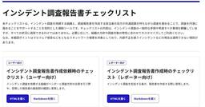
“初めてのインシデント調査”に備えられる JPCERT/CCがチェックリストを無償公開 19ITmedia エンタープライズ「セキュリティ」 最新記事一覧
ランサムウェア攻撃や情報漏えいの増加で、インシデント調査を外部に委託する企業が増えている。だが初めて被害に遭った組織は、調査の妥当性や収束の判断に迷いやすい。JPCERT/CCが公開したチェックリストでは何を確認するのか。
7日前

物理世界とAIをつなぐ：可視化で学ぶカメラ・座標系・運動制御入門 | Tech Blog - Turingのフィード 15
企業テックブログRSS
1. はじめにAIが「いま何を考えているのか」を、人間はどうやって知ればいいのでしょうか？我々チューリング株式会社は、カメラ映像から走行軌跡を直接予測するEnd-to-End（E2E）自動運転AIを開発しています。社内では、予測軌跡をカメラ映像に重ねる可視化が、実車試験の振り返りからデモ映像まで、あらゆる場面で使われています。https://x.com/DaisukeMAN/status/2109
5日前
物理世界とAIをつなぐ：可視化で学ぶカメラ・座標系・運動制御入門 | Tech Blog - Turingのフィード 15 AI情報RSS
1. はじめにAIが「いま何を考えているのか」を、人間はどうやって知ればいいのでしょうか？我々チューリング株式会社は、カメラ映像から走行軌跡を直接予測するEnd-to-End（E2E）自動運転AIを開発しています。社内では、予測軌跡をカメラ映像に重ねる可視化が、実車試験の振り返りからデモ映像まで、あらゆる場面で使われています。https://x.com/DaisukeMAN/status/2109
5日前
物理世界とAIをつなぐ：可視化で学ぶカメラ・座標系・運動制御入門 15 Tech Blog - Turingのフィード
1. はじめにAIが「いま何を考えているのか」を、人間はどうやって知ればいいのでしょうか？我々チューリング株式会社は、カメラ映像から走行軌跡を直接予測するEnd-to-End（E2E）自動運転AIを開発しています。社内では、予測軌跡をカメラ映像に重ねる可視化が、実車試験の振り返りからデモ映像まで、あらゆる場面で使われています。https://x.com/DaisukeMAN/status/2109
5日前
物理世界とAIをつなぐ：可視化で学ぶカメラ・座標系・運動制御入門 15 Zennの「Physical AI」のフィード
1. はじめにAIが「いま何を考えているのか」を、人間はどうやって知ればいいのでしょうか？我々チューリング株式会社は、カメラ映像から走行軌跡を直接予測するEnd-to-End（E2E）自動運転AIを開発しています。社内では、予測軌跡をカメラ映像に重ねる可視化が、実車試験の振り返りからデモ映像まで、あらゆる場面で使われています。https://x.com/DaisukeMAN/status/2109
5日前
Google Colab API ・ MCP Endpoint の概要 - 機能・使い方・Colab CLIとの違い | npaka 4 AI情報RSS
「Google Colab API」「MCP Endpoint」の概要をまとめました。続きをみる
4日前
Google Colab API ・ MCP Endpoint の概要 - 機能・使い方・Colab CLIとの違い 4 npaka
「Google Colab API」「MCP Endpoint」の概要をまとめました。続きをみる
4日前
［速報］Azure SQL Databaseをローカルで実行する「Azure SQL Database local development container」パブリックプレビュー 4 Publickey
マイクロソフトは日本時間11月18日未明に開幕した年次イベント「Microsoft Ignite 2026」で、Azure SQL Databaseをローカルで実行する「Azure SQL Database local developmen...
4日前

Herdrで、エージェントに渡した仕事を受け入れまで見守りたい 14
じゃあ、おうちで学べる
はじめに 前回の記事ではHerdrのサイドバーで、どのエージェントが自分を待っているかを探す方法を書きました。Herdrが表示するのは、エージェントの作業中や入力待ちといった状態です。渡した仕事が終わったかどうかは、画面と会話を読んで自分で判断するしかありません。 syu-m-5151.hatenablog.com Addy Osmani氏は2026年2月の記事で、AIが実装し、人がアーキテクチャ
7日前
agent-framework ソフトウェアサプライチェーン攻撃の概要と対策指針 | GMO Flatt Security Blog 3 企業テックブログRSS
企業テックブログRSS
2026年11月18日、Microsoft公式Pythonフレームワークである agent-framework のPyPI パッケージ 1.26.1、1.26.2 に、悪性コードが注入されました。 注入された悪性コードは Infostealer 型マルウェアです。 このマルウェアはPython インタプリタ起動時に自動実行され、環境変数・認証情報ファイル・他プロセスの環境変数・OIDC/マネージド
3日前

「あれ、どこ行った？」をバケツリレーで教えてくれるGoogle純正スマートタグ「Pixel Tag」の使い勝手（Google Tales） 3 テクノエッジ TechnoEdge
AppleのAirTagやSamsungのSmartTagの発売から遅れること約5年。「Googleは純正のスマートタグを出す気がないのかな」と思っていたところに、スマートタグ「Pixel Tag」の登場です。8月のMade by Googleイベントで発表し、11月12日に発売されました。
4日前
「あれ、どこ行った？」をバケツリレーで教えてくれるGoogle純正スマートタグ「Pixel Tag」の使い勝手（Google Tales） | テクノエッジ TechnoEdge 3 AI情報RSS
AppleのAirTagやSamsungのSmartTagの発売から遅れること約5年。「Googleは純正のスマートタグを出す気がないのかな」と思っていたところに、スマートタグ「Pixel Tag」の登場です。8月のMade by Googleイベントで発表し、11月12日に発売されました。
4日前


Put Gemini to work for you 6 AI
AI
Tasks in Gemini is now free of charge in six countries, with new features starting in the U.S. and deeper Google Workspace integration to get things done on your behalf.
4日前
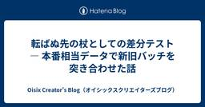
転ばぬ先の杖としての差分テスト ― 本番相当データで新旧バッチを突き合わせた話 | Oisix Creator's Blog（オイシックスクリエイターズブログ） 4 企業テックブログRSS
企業テックブログRSS
1. はじめに こんにちは。Oisixプロダクト開発部の栗崎です。 以前の記事では、第三世代アーキテクチャのアプリケーションを Spring Boot 4 にアップデートした話を紹介しました。移行前後に同じテストを当てて「結果が変わらないこと」を確かめる、という進め方はそのときに書いたとおりです。 今回はその続きで、対象は第二世代アーキテクチャのアプリケーションです。第二世代では、コアな機能の 1
4日前

生成AIで7割が時短実感も4割弱は「負担が増えた」 半数がAIの答えを手で転記、大手企業309人調査 4 テクノエッジ TechnoEdge
大手企業の309人調査では、71.8%が時短実感、37.3%が負担増。出力確認・転記などの手作業が多く、ルール整理不足と疲労感が課題。
5日前
生成AIで7割が時短実感も4割弱は「負担が増えた」 半数がAIの答えを手で転記、大手企業309人調査 | テクノエッジ TechnoEdge 4 AI情報RSS
大手企業の309人調査では、71.8%が時短実感、37.3%が負担増。出力確認・転記などの手作業が多く、ルール整理不足と疲労感が課題。
5日前

開発リポジトリの設定ファイルを書き換え、Claude Code起動でバックドア GoogleがAI悪用の最新手口を報告 4 テクノエッジ TechnoEdge
Googleの脅威インテリジェンスグループ（GTIG）とMandiantは、攻撃者による生成AIの悪用をまとめた四半期レポートを発表しました。攻撃者は、AIに1回ずつ質問する使い方から、複数のAIエージェントに侵入を自動で進めさせる段階に移ったとしています。
5日前
開発リポジトリの設定ファイルを書き換え、Claude Code起動でバックドア GoogleがAI悪用の最新手口を報告 | テクノエッジ TechnoEdge 4 AI情報RSS
Googleの脅威インテリジェンスグループ（GTIG）とMandiantは、攻撃者による生成AIの悪用をまとめた四半期レポートを発表しました。攻撃者は、AIに1回ずつ質問する使い方から、複数のAIエージェントに侵入を自動で進めさせる段階に移ったとしています。
5日前

「記号3種類以上」「8文字以内」――煩雑過ぎるルールの中でパスワード使い回しをやめるには 4ITmedia エンタープライズ「セキュリティ」 最新記事一覧
2026年10月以降、不正アクセス事案が相次ぎ、利用者側では防ぎようのない侵害も目立ちます。それでも個人にできる対策が、使い回したパスワードを1つずつ変える地味な作業です。
5日前

電子マネー基盤「Pokepay」への不正アクセスについてまとめてみた 3
piyolog
2026年11月14日、ポケットチェンジは電子マネー基盤「Pokepay」(Enterprise)のシステムに対する第三者からの不正アクセスを確認し、全サービスを一時停止したと公表しました。この影響を受けて、大学生協電子マネーや自治体のデジタル地域通貨などのサービスも停止しています。ここでは関連する情報をまとめます。Pokepay(Enterprise)の全サービスを予防的に停止2026年11月1
4日前
LLM に別の LLM の重みを書き換えさせる Weight-Space Programming を、Claude で試してみた 3 FLINTERS BLOGのフィード
はじめにこんにちは。FLINTERSの河内です。社内で毎週開いている AI 活用の勉強会で、今回（2026-11-16）は私が担当でした。本編で取り上げたのは、MIT CSAIL のチームが 11 月 2 日にブログで発表した Weight-Space Programming です。小さな LLM の重みを、別の LLM のエージェントに直接書き換えさせたところ、数学のベンチマークの正答率が 7.
5日前

Anthropic、深刻な脆弱性の公開スケジュールを短縮へ ―AIを活用した脆弱性発見に対応 3 gihyo.jp
Anthropicは2026年11月16日、同社が発見した脆弱性を開発元へ報告してから一般公開するまでの期限を短縮すると発表した。
5日前
Claude CodeでAIエージェントの環境設定を非エンジニア向けに最適化しよう 3 gihyo.jp
今回は、Git・資格情報・バックアップの3つを設定します。Claude Codeは開発者向けの道具なので、周りにある作法もエンジニアのものです。
5日前

生成AIグラビアをグラビアカメラマンが作るとどうなる？第78回：Apache 2.0で何にでも使えるMOSS-Imageをさらに活用しよう（西川和久） 3 テクノエッジ TechnoEdge
今回は、MOSS-Imageの続き。MOSS-Imageは、Apache 2.0に対応し高い性能とクオリティを持つ画像生成モデルだ。
5日前
生成AIグラビアをグラビアカメラマンが作るとどうなる？第78回：Apache 2.0で何にでも使えるMOSS-Imageをさらに活用しよう（西川和久） | テクノエッジ TechnoEdge 3 AI情報RSS
今回は、MOSS-Imageの続き。MOSS-Imageは、Apache 2.0に対応し高い性能とクオリティを持つ画像生成モデルだ。
5日前

AWSはアクセスキーなんてやめちまえ 4 AWSタグが付けられた新着記事 - Qiita
はじめにAWSはアクセスキーなんてやめちまえ、と思っています。アクセスキーは、アクセスキーIDとシークレットアクセスキーの2つでできた、期限のない認証情報です。「見えるところに置かないでください」と何度言われても、置く会社は置きます。私がAWSに触れ始めてから5年ほどの間、ずっと同じことを言われてる感じです注意を呼びかけても減らないのなら、置けるものを発行しなければよい、というのが私の考えです。と
5日前
AWSはアクセスキーなんてやめちまえ 4 GoogleCloudタグが付けられた新着記事 - Qiita
はじめにAWSはアクセスキーなんてやめちまえ、と思っています。アクセスキーは、アクセスキーIDとシークレットアクセスキーの2つでできた、期限のない認証情報です。「見えるところに置かないでください」と何度言われても、置く会社は置きます。私がAWSに触れ始めてから5年ほどの間、ずっと同じことを言われてる感じです注意を呼びかけても減らないのなら、置けるものを発行しなければよい、というのが私の考えです。と
5日前

Cloudflare、AIエージェント向け軽量ブラウザ「Kitesurf」をオープンソースとして公開 4 gihyo.jp
Cloudflareは2026年11月12日、AIエージェント向けブラウザ「Kitesurf」をApache 2.0ライセンスのもと、GitHub上でオープンソースとして公開した。
5日前
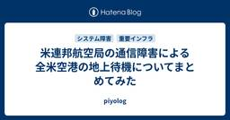
米連邦航空局の通信障害による全米空港の地上待機についてまとめてみた 4
piyolog
2026年11月13日、米連邦航空局(FAA)は通信網の技術的な問題を受けて全米の空港を対象に地上待機を発出しました。ここでは関連する情報をまとめます。全米の出発便を止めた地上待機以下の時刻は米東部時間(日本時間は14時間先)。11月13日、FAAの通信網で技術的な問題が起きて複数の管制施設で航空機との交信とレーダーフィードが不安定になった。FAAは念のための措置として全米の空港を対象に地上待機を
5日前
mizchi/mutator を入れてみた 4 Zennのトレンド
この記事に書いてあることAI が書きまくったテストに意味のないテストがどれくらいあるのか数えた金額や権限など間違えるとやばいところはテストの穴を 0 件にしたStrykerJS と条件をそろえて比べてみたけど確かに速い開発ワークフロースキルに組み込んで、意味のないテストが書かれたらすぐ気づけるようにした機械的に拾えないものはスキルでカバー毎回全部は流さない。その作業で修正したコードとテストに関係す
6日前
Google、Microsoft、AWS、CloudflareがAI侵入テストツールARTEXの悪用を報告、FBIも注意喚起 4 gihyo.jp
Google、Microsoft、AWS、Cloudflareは2026年10月末から11月13日にかけて、AIエージェントを使う侵入テストツールARTEXなどの悪用を相次いで報告した。攻撃者は、認証情報の探索や侵入先の調査に加え、侵入先から別のシステムへ攻撃を広げる際にもエージェントを利用している。
6日前

PHP重大脆弱性は「始まり」に過ぎない？ 2年前の兆候が示す“次の危機” 4＠IT Security&Trustフォーラム 最新記事一覧
PHPの重大な脆弱性「php2shell」は、実は2024年の段階で問題の兆候が見つかっていました。それでも修正は進まず、約2年後に重大な脅威として表面化しました。その背景にあったのは何でしょうか。AIが脆弱性を見つける速度を高める今、問題を修正できない組織は何を失うのでしょうか。
7日前

Datadog認定5冠を達成しました | フューチャー技術ブログ 3 企業テックブログRSS
Datadog Database Monitoring Fundamentalsに合格し、Datadog認定の5冠を達成しました。最初のFundamentalsから約1か月半、業務で使っていたDatadogを試験の範囲に沿って学び直した合格記です。
5日前
Datadog認定5冠を達成しました | フューチャー技術ブログ 3 AI情報RSS
Datadog Database Monitoring Fundamentalsに合格し、Datadog認定の5冠を達成しました。最初のFundamentalsから約1か月半、業務で使っていたDatadogを試験の範囲に沿って学び直した合格記です。
5日前
Datadog認定5冠を達成しました 3 フューチャー技術ブログ
Datadog Database Monitoring Fundamentalsに合格し、Datadog認定の5冠を達成しました。最初のFundamentalsから約1か月半、業務で使っていたDatadogを試験の範囲に沿って学び直した合格記です。
5日前

New Ask Maps features to help with holiday travel and prep 3 AI
Plan holiday road trips, get route tips, find local appointments, and search your saved lists with new Ask Maps features.
5日前

『LIFE with AI』を読んでAI時代のやりたいことを考えた 3 karaage. [からあげ]
karaage. [からあげ]
『LIFE with AI』を読みました 岡安モフモフさんこと岡安淳司さんの『LIFE with AI AIが人を超えていく時代の生存戦略』を、ご恵贈いただき読んでいます。ありがとうございます！LIFE with AI AIが人を超えていく時代の生存戦略作者:岡安淳司かんき出版Amazon AIとどう付き合い、これからどう生きていくかを考える本です。全体的に私が考えていることと近く、共感するところ
5日前

Personal Agent Protocol 1.0公開、ShopifyやMetaのMuseが対応 3
gihyo.jp
企業向けAIエージェントを開発するSierraは2026年11月13日、個人向けAIエージェントと企業のやり取りを定めるPersonal Agent Protocol（通称Poppy）のバージョン1.0を公開したと発表した。Shopifyの全ストアが対応し、MetaのAIエージェントMuseでは、すべてのユーザーがPoppyを利用できるようになった。
5日前

WPPConnect ソフトウェアサプライチェーン攻撃の概要と対策指針 | GMO Flatt Security Blog 3 企業テックブログRSS
2026年11月16日、WhatsApp Web を Node.js から操作する SDKである @wppconnect-team/wppconnect のnpm パッケージ 2.4.1に、悪性コードが注入されました。 注入された悪性コードは Infostealer 型マルウェアです。 require()や import された際(Dockerイメージではサーバー起動時)に、開発者や運用者の環境変
6日前

今は騒がしいAI攻撃もやがて「目立たなくなる」のか？ “次の段階”とその備え 3＠IT Security&Trustフォーラム 最新記事一覧
AIエージェントを使ったサイバー攻撃は、今後どのように変化するのか。Cisco Talosは、現在の攻撃は大量のアクセスなどによって検知しやすい一方、攻撃者が速度よりも隠密性を重視するようになれば、検知が難しくなる可能性があると指摘した。
6日前

【Terraform×AWS】ALBにAWS WAFを設定し、マネージドルールで攻撃を防ぐ 3 AWSタグが付けられた新着記事 - Qiita
インターネットに公開したWebアプリには、公開した直後から、脆弱性を探すアクセスや大量のリクエストが届きます。アプリケーション側で対策していても、よくある攻撃はALBの手前で止めておくと安心です。この記事では、ALBにAWS WAFを設定し、AWSが用意しているマネージドルールとレート制限で、よくある攻撃を防ぐ構成をTerraformで作ります。構成Web ACL：ルールをまとめたもの。ALBに関
7日前
【Terraform×AWS】ALBにAWS WAFを設定し、マネージドルールで攻撃を防ぐ 3 Securityタグが付けられた新着記事 - Qiita
インターネットに公開したWebアプリには、公開した直後から、脆弱性を探すアクセスや大量のリクエストが届きます。アプリケーション側で対策していても、よくある攻撃はALBの手前で止めておくと安心です。この記事では、ALBにAWS WAFを設定し、AWSが用意しているマネージドルールとレート制限で、よくある攻撃を防ぐ構成をTerraformで作ります。構成Web ACL：ルールをまとめたもの。ALBに関
7日前